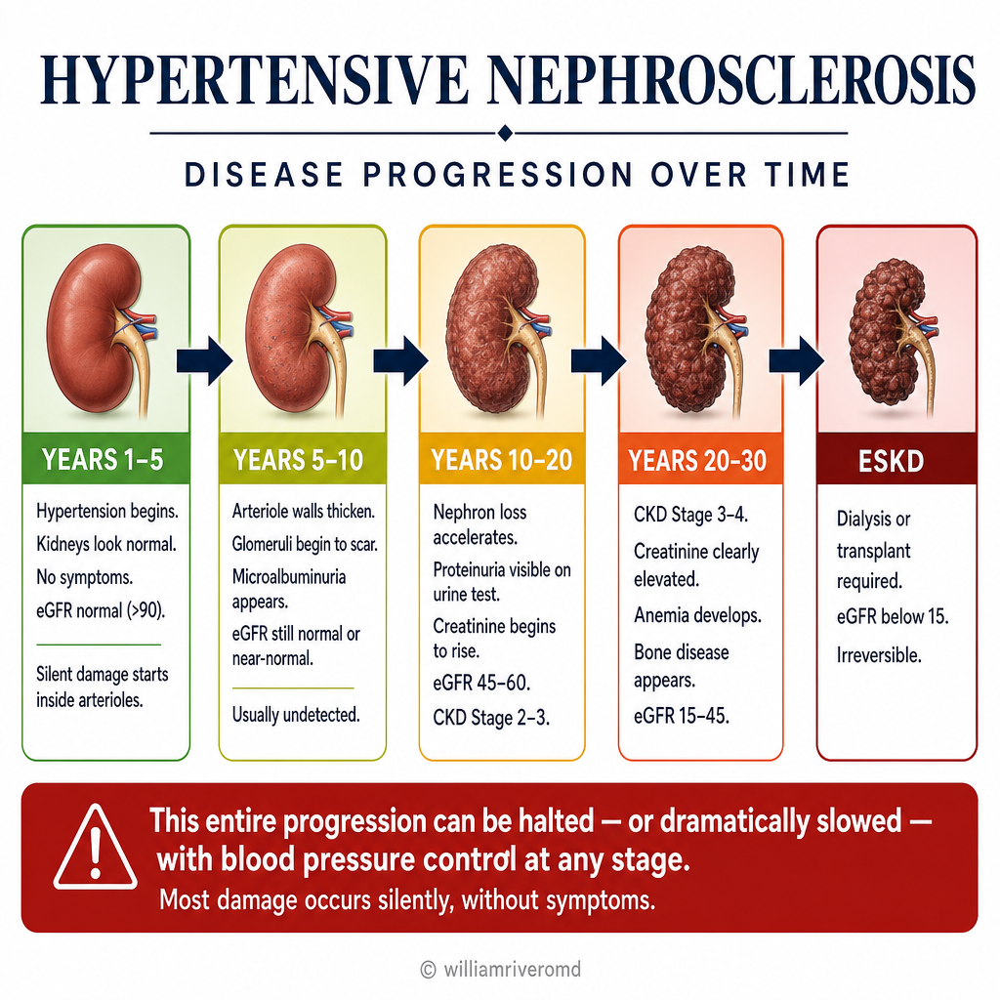

What Is Hypertensive Kidney Disease?Ano ang Hypertensive na Sakit sa Bato?Unsa ang Hypertensive nga Sakit sa Kidney?Nanu ya ing Hypertensive a Sakit king Batu?
Hypertensive kidney disease — also called hypertensive nephrosclerosis — is the progressive scarring and loss of kidney tissue caused by years of uncontrolled or inadequately controlled high blood pressure. It has no unique symptoms until late stages. Most patients first learn about it from a routine blood test showing elevated creatinine, or from a urine test showing protein. By then, 30–50% of kidney function may already be gone.Ang hypertensive na sakit sa bato — tinatawag din na hypertensive nephrosclerosis — ay ang progresibong peklat at pagkawala ng tisyu ng bato na sanhi ng maraming taon ng hindi kontrolado o hindi sapat na kontroladong mataas na presyon ng dugo. Ito ay walang natatanging sintomas hanggang sa mga huling yugto. Karamihan sa mga pasyente ay unang nalaman ang tungkol dito mula sa isang routine na pagsusuri sa dugo na nagpapakita ng mataas na creatinine, o mula sa pagsusuri ng ihi na nagpapakita ng protina. Sa oras na iyon, 30–50% ng function ng bato ay maaaring wala na.Ang hypertensive nga sakit sa kidney — gitawag usab nga hypertensive nephrosclerosis — mao ang progresibong peklat ug pagkawala sa tissue sa kidney nga hinungdan sa daghang tuig nga wala kontrolaha o dili husto nga kontrolaha nga taas nga presyon sa dugo. Kini walay talagsaong sintomas hangtod sa ulahing mga yugto. Kadaghanan sa mga pasyente nahibal-an kini una gikan sa routine nga pagsusi sa dugo nga nagpakita sa taas nga creatinine, o gikan sa pagsusi sa ihi nga nagpakita sa protina. Niadtong panahona, 30–50% sa function sa kidney mahimong nawala na.Ing hypertensive a sakit king batu — tawagan pa naman hypertensive nephrosclerosis — ing progresibong peklat at pagkawala ning tisyu ning batu manibatan king marakal a taun ning hindi kontroladu o hindi tama a kontroladung mataas a presyon ning daya. Iti ala yang natatanging sintomas anggang king maulahing yugto. Karamian king mga pasyente metung kareng una nilang naintindihan iti manibatan king routine a pagsusuri king daya a nagpapakita ning mataas a creatinine, o manibatan king pagsusuri ning ihi a nagpapakita ning protina. Nune, 30–50% ning function ning batu mahirap na malyari a nawala na.

The frightening reality of hypertensive nephrosclerosis: a patient may have had high blood pressure for 15–20 years before kidney disease is ever detected — because the kidneys have no pain receptors. By the time creatinine rises on a blood test, approximately 50% of nephrons have already been permanently lost.Ang nakakatakot na katotohanan ng hypertensive nephrosclerosis: ang isang pasyente ay maaaring nagkaroon ng mataas na presyon ng dugo sa loob ng 15–20 taon bago matukoy ang sakit sa bato — dahil ang mga bato ay walang pain receptor. Sa oras na tumaas ang creatinine sa pagsusuri ng dugo, humigit-kumulang 50% ng mga nephron ay permanenteng nawala na.Ang makalilisang katinuoran sa hypertensive nephrosclerosis: ang usa ka pasyente mahimong nakaagi sa taas nga presyon sa dugo sulod sa 15–20 ka tuig sa wala pa makit-an ang sakit sa kidney — tungod kay ang mga kidney walay pain receptor. Sa panahon nga mosaka ang creatinine sa pagsusi sa dugo, mga 50% sa mga nephron nawala na sa permanente.Ing makatatakut a katotoanan ning hypertensive nephrosclerosis: ing metung a pasyente malyari yang nagkaron ning mataas a presyon ning daya king 15–20 a taun bago pa matukoy ing sakit king batu — uling ing mga batu ala lang pain receptor. Nune anggang tumaas ya ing creatinine king pagsusuri ning daya, mga 50% na ning mga nephron nawala na king permanente.
How common is this in the Philippines?Gaano kadalas ito sa Pilipinas?Unsa ka sagad kini sa Pilipinas?Kasagad-sagad mo iti king Pilipinas?
Hypertension is the #2 cause of End-Stage Kidney Disease (ESKD) in the Philippines, accounting for approximately 20–25% of all dialysis patients — second only to diabetic nephropathy. The Philippine Renal Disease Registry (PRDR) consistently shows that a large proportion of hypertensive ESKD patients had no regular nephrology follow-up before their kidneys failed. Many did not even know they had CKD.Ang hypertensyon ay ang #2 na sanhi ng End-Stage Kidney Disease (ESKD) sa Pilipinas, na bumubuo ng humigit-kumulang 20–25% ng lahat ng pasyente sa dialysis — pangalawa lamang sa diabetic nephropathy. Ang Philippine Renal Disease Registry (PRDR) ay patuloy na nagpapakita na malaking bahagi ng mga hypertensive na pasyente ng ESKD ay walang regular na pagsubaybay ng nephrology bago mabigo ang kanilang mga bato. Marami ang hindi man lang alam na mayroon silang CKD.Ang hypertensyon mao ang #2 nga hinungdan sa End-Stage Kidney Disease (ESKD) sa Pilipinas, nga nagrepresenta sa halos 20–25% sa tanan nga pasyente sa dialysis — ikaduha lamang sa diabetic nephropathy. Ang Philippine Renal Disease Registry (PRDR) kanunay nagpakita nga dako nga bahin sa hypertensive nga mga pasyente sa ESKD walay regular nga nephrology follow-up sa wala pa mabali ang ilang mga kidney. Daghan ang wala gani mahibal-an nga aduna silay CKD.Ing hypertensyon #2 a sanhi ning End-Stage Kidney Disease (ESKD) king Pilipinas, na kumakatawan king mga 20–25% ning lahat ning mga pasyente king dialysis — pangalawa lamang king diabetic nephropathy. Ing Philippine Renal Disease Registry (PRDR) kanyan nagpapakita na malaking bahagi ning mga hypertensive a pasyente ning ESKD ala lang regular a nephrology follow-up bago pa mabali deng batu ra. Marakal ing hindi pa naman balu na atin yang CKD.
Who is at highest risk?Sino ang pinaka-nanganganib?Kinsa ang labing nangangaos?Ninu ing mas nanganganib?
Filipinos with long-standing, undertreated hypertension (10+ years). Men are at higher risk than women before age 60. Those with a family history of kidney disease or hypertension. Patients who take blood pressure medications inconsistently — stopping when they "feel okay." Those with additional risk factors: smoking, obesity, high uric acid (gout), high salt intake, or NSAIDs used regularly for pain.Mga Pilipino na may matagal, kulang sa paggamot na hypertensyon (10+ taon). Ang mga lalaki ay nasa mas mataas na panganib kaysa sa mga babae bago mag-60 taong gulang. Ang mga may kasaysayan ng sakit sa bato o hypertensyon sa pamilya. Mga pasyente na kumukuha ng gamot para sa presyon ng dugo nang hindi tuluy-tuloy — humihinto kapag "okay na ang pakiramdam." Mga may karagdagang salik ng panganib: paninigarilyo, labis na timbang, mataas na uric acid (gout), mataas na paggamit ng asin, o NSAIDs na regular na ginagamit para sa sakit.Mga Pilipino nga adunay dugay na, kulang sa tambal nga hypertensyon (10+ ka tuig). Ang mga lalaki mas nangangaos kaysa sa mga babaye sa wala pa ang 60 anyos. Kadtong adunay kasaysayan sa pamilya sa sakit sa kidney o hypertensyon. Mga pasyente nga nagkuha sa presyon sa dugo nga tambal nga dili regular — mohunong kung "okay na ang gibati." Kadtong adunay dugang nga risk factors: pagpanigarilyo, sobra ka timbang, taas nga uric acid (gout), taas nga asin, o NSAIDs nga regular nga gigamit para sa kasakit.Mga Pilipino a atin matagal, kulang king tambal a hypertensyon (10+ a taun). Ing mga lalaki mas nanganganib kesa king mga babai bago mag-60 taun. Kadtong adwang kasaysayan ning pamilya sa sakit king batu o hypertensyon. Mga pasyente a kumukuha ning gamit para king presyon ning daya nang hindi tuluy-tuloy — titigil nung "okay na ing pakiramdam." Kadtong adwang karagdagang risk factors: panigarilyo, sobrang timbang, mataas a uric acid (gout), mataas a asin, o NSAIDs a regular a gagamitan para king sakit.
Hypertensive nephrosclerosis vs. diabetic kidney disease — key differenceHypertensive nephrosclerosis kumpara sa diabetic na sakit sa bato — pangunahing pagkakaibaHypertensive nephrosclerosis vs. diabetic nga sakit sa kidney — panguna nga kalainanHypertensive nephrosclerosis vs. diabetic a sakit king batu — pangunahing pagkakaiba
Both are silent, progressive, and preventable. The main differences: diabetic kidney disease typically causes heavy proteinuria early and progresses faster. Hypertensive nephrosclerosis typically causes mild-to-moderate proteinuria, progresses over decades, and is often only detected when creatinine rises on routine labs. Many patients are told "your kidneys are a bit affected" without understanding the severity.Parehong tahimik, progresibo, at mapipigilan. Ang pangunahing pagkakaiba: ang diabetic na sakit sa bato ay karaniwang nagdudulot ng mabigat na proteinuria nang maaga at mas mabilis ang pag-unlad. Ang hypertensive nephrosclerosis ay karaniwang nagdudulot ng banayad hanggang katamtamang proteinuria, umuusad sa loob ng mga dekada, at madalas lamang natutukoy kapag tumaas ang creatinine sa routine na lab. Maraming pasyente ang sinabihan na "medyo naapektuhan ang inyong mga bato" nang hindi naiintindihan ang kalubhaan.Ang duha hilom, progresibo, ug mapigongan. Ang panguna nga mga kalainan: ang diabetic nga sakit sa kidney sagad nagpahinabo sa bug-at nga proteinuria sayo ug mas paspas ang pag-uswag. Ang hypertensive nephrosclerosis sagad nagpahinabo sa gaan hangtod katamtamang proteinuria, nagaprogreso sulod sa mga dekada, ug sagad namatikdan lamang kung mosaka ang creatinine sa routine nga lab. Daghang pasyente gisultihan nga "gamay lang naapektuhan ang imong mga kidney" nga wala masabti ang kabug-aton.Parehang tahimik, progresibo, at mapigilan. Ing pangunahing pagkakaiba: ing diabetic a sakit king batu karaniwang sanhi ning mabigat a proteinuria nang maaga at mas mapaspas ing pag-unlad. Ing hypertensive nephrosclerosis karaniwang sanhi ning banayad anggang katamtamang proteinuria, umuusad king lub ning mga dekada, at madalas lamang natukoy nung tumaas ing creatinine king routine a lab. Marakal a pasyente ing sinabiang "medyo naapektuhan deng batu mu" at ala pang naintindihang kabigatan nito.
The Mechanism: Pressure, Scarring, and Lost NephronsAng Mekanismo: Presyon, Peklat, at Nawawalang mga NephronAng Mekanismo: Presyon, Peklat, ug Nawala nga mga NephronIng Mekanismo: Presyon, Peklat, at Nawawalang mga Nephron
The kidneys contain approximately 2 million nephrons — the microscopic filtering units that clean your blood. Each nephron contains a tiny ball of capillaries called a glomerulus. When blood pressure is chronically high, these capillaries are subjected to abnormal mechanical stress — and the kidney responds in ways that ultimately destroy itself.Ang mga bato ay naglalaman ng humigit-kumulang 2 milyong nephron — ang mga microscopic na filtering unit na naglilinis ng inyong dugo. Ang bawat nephron ay naglalaman ng maliit na bola ng mga capillary na tinatawag na glomerulus. Kapag ang presyon ng dugo ay patuloy na mataas, ang mga capillary na ito ay napapailalim sa abnormal na mechanical stress — at ang bato ay tumutugon sa mga paraan na sa huli ay sinisira ang sarili nito.Ang mga kidney adunay halos 2 milyong nephron — ang microscopic nga filtering unit nga naglimpyo sa imong dugo. Ang matag nephron adunay gamay nga bola sa mga capillary nga gitawag og glomerulus. Kung ang presyon sa dugo padayon nga taas, kining mga capillary gipailalum sa abnormal nga mechanical stress — ug ang kidney motubag sa mga paagi nga sa katapusan naglaglag sa iyang kaugalingon.Deng batu atyan king mga 2 milyong nephron — deng microscopic a filtering unit a maglinis ning daya mu. Ing balang nephron atyan ning melding bola ning mga capillary a tawagan glomerulus. Nung ing presyon ning daya kanyan mataas, dening mga capillary mapailalim king abnormal a mechanical stress — at ing batu tumutugon king mga paraan a king katapusan sisirien ya ing sarili na.
Afferent arteriole injury — the first hitPinsala sa afferent arteriole — ang unang dagokKadaot sa afferent arteriole — ang unang hampakPerwisyu king afferent arteriole — ing maging hampak
The afferent arteriole is the small vessel that feeds blood into each glomerulus. Chronic high blood pressure causes the arteriole walls to thicken (hyalinosis and hyperplastic arteriolosclerosis) — a process where normal smooth muscle cells are replaced by stiff, hyaline material. This narrows the vessel and reduces blood flow to the glomerulus.Ang afferent arteriole ay ang maliliit na daluyan na nagpapapasok ng dugo sa bawat glomerulus. Ang patuloy na mataas na presyon ng dugo ay nagdudulot ng pagsisikip ng mga dingding ng arteriole (hyalinosis at hyperplastic arteriolosclerosis) — isang proseso kung saan ang normal na mga smooth muscle cell ay pinapalitan ng matibay, hyaline na materyal. Pinipigilan nito ang daluyan at binabawasan ang daloy ng dugo sa glomerulus.Ang afferent arteriole mao ang gagmayng daluyan nga nagpadala sa dugo sa matag glomerulus. Ang padayon nga taas nga presyon sa dugo nagpahinabo sa pagpasiksik sa mga dingding sa arteriole (hyalinosis ug hyperplastic arteriolosclerosis) — usa ka proseso diin ang normal nga smooth muscle cell gipulihan sa tig-a, hyaline nga materyal. Kini nagikit sa daluyan ug naghinay sa daloy sa dugo ngadto sa glomerulus.Ing afferent arteriole ing melding daluyan a nagpapasok ning daya king balang glomerulus. Ing tuluy-tuluy a mataas a presyon ning daya sanhi ning pagkasiksik ning mga dingding ning arteriole (hyalinosis at hyperplastic arteriolosclerosis) — metung a proseso nung nunung ing normal a mga smooth muscle cell kapalitan ning matibay, hyaline a materyal. Iti nagpasiksik king daluyan at nagbabawas ning daloy ning daya king glomerulus.
Glomerular hypertension — pressure transmitted inwardGlomerular hypertension — presyon na pumapasok sa loobGlomerular hypertension — presyon nga gipadala pasulodGlomerular hypertension — presyon a napabalabalang pasuk
In healthy kidneys, the afferent arteriole autoregulates — it contracts to protect the glomerulus from high systemic pressure. In hypertensive nephrosclerosis, this autoregulation fails. High pressure is transmitted directly into the glomerular capillaries, causing glomerular hypertension. The delicate filtration membrane (podocytes) is damaged by this mechanical force.Sa malusog na mga bato, ang afferent arteriole ay nag-aayos ng sarili — nagkukumba ito upang protektahan ang glomerulus mula sa mataas na sistematikong presyon. Sa hypertensive nephrosclerosis, nabibigo ang awtoregulasiyon na ito. Ang mataas na presyon ay direktang ipinapadala sa mga glomerular capillary, na nagdudulot ng glomerular hypertension. Ang delikadong filtration membrane (podocytes) ay napinsala ng puwersa na ito.Sa maayo nga mga kidney, ang afferent arteriole nag-autoregulate — nagco-contract kini aron protektahan ang glomerulus gikan sa taas nga systemic nga presyon. Sa hypertensive nephrosclerosis, kining autoregulation napakyas. Ang taas nga presyon direkta nga gipadala ngadto sa mga glomerular capillary, nga nagpahinabo sa glomerular hypertension. Ang delikadong filtration membrane (podocytes) nadaot sa kining mechanical nga puwersa.King malusog a mga batu, ing afferent arteriole nag-aayos ning sarili — nagkukumba ya nung protektahan ing glomerulus manibatan king mataas a systemic a presyon. King hypertensive nephrosclerosis, nabibigo ya ing autoregulation na iti. Ing mataas a presyon direkta a napabala king mga glomerular capillary, sanhi ning glomerular hypertension. Ing delikadong filtration membrane (podocytes) napinsala ning puwersa na iti.
Proteinuria — the kidneys begin to leakProteinuria — nagsisimulang tumagas ang mga batoProteinuria — nagsugod motulo ang mga kidneyProteinuria — nagsisimula nang tumulo deng batu
Damaged podocytes allow protein (mainly albumin) to pass through the filtration barrier into the urine. This is detected as microalbuminuria initially (30–300 mg/day), and later as overt proteinuria (>300 mg/day). Proteinuria is not just a sign of damage — it is itself toxic to the tubules, accelerating further kidney injury in a vicious cycle.Ang nasirang mga podocyte ay nagpapahintulot sa protina (pangunahin ang albumin) na dumaan sa filtration barrier patungo sa ihi. Ito ay natatukoy bilang microalbuminuria sa una (30–300 mg/araw), at kalaunan bilang hayagang proteinuria (>300 mg/araw). Ang proteinuria ay hindi lamang tanda ng pinsala — ito mismo ay nakakalason sa mga tubule, na nagpapabilis ng karagdagang pinsala sa bato sa isang masamang ikot.Ang nadaot nga mga podocyte nagtugot sa protina (pangunahin ang albumin) moagi sa filtration barrier ngadto sa ihi. Kini nakit-an ingon microalbuminuria una (30–300 mg/adlaw), ug unya ingon klaro nga proteinuria (>300 mg/adlaw). Ang proteinuria dili lamang timaan sa kadaot — kini mismo racunon sa mga tubule, nagpadali sa dugang kadaot sa kidney sa usa ka dautang siklo.Deng nasarang mga podocyte nagpapahintulot king protina (pangunalin ing albumin) a lumabas king filtration barrier patung king ihi. Iti natukoy bilang microalbuminuria una (30–300 mg/aldo), at kalaunan bilang hayagang proteinuria (>300 mg/aldo). Ing proteinuria hindi lamang tanda ning pinsala — iti mismo na nakalalason king mga tubule, nagpapabilis ning karagdagang pinsala king batu king metung a masamang ikot.
Glomerulosclerosis — permanent scarringGlomerulosclerosis — permanenteng peklatGlomerulosclerosis — permanenteng peklatGlomerulosclerosis — permanenteng peklat
Injured glomeruli trigger a fibrotic repair response, replacing functional filtering tissue with scar tissue (focal segmental glomerulosclerosis). Each scarred glomerulus is permanently non-functional. Surviving nephrons compensate by hyperfiltrating — working harder to make up for lost ones — which accelerates their own destruction.Ang nasugatan na mga glomeruli ay nagpapasimula ng fibrotic repair response, pinapalitan ang functional na filtering tissue ng scar tissue (focal segmental glomerulosclerosis). Ang bawat peklat na glomerulus ay permanenteng hindi gumagana. Ang mga natitirang nephron ay nagbibigay-kapalit sa pamamagitan ng hyperfiltration — mas mahirap na nagtatrabaho upang makabawi para sa mga nawala — na nagpapabilis ng kanilang sariling pagkasira.Ang nasamdan nga mga glomeruli nagpasugod sa fibrotic repair response, nagpuli sa functional nga filtering tissue og scar tissue (focal segmental glomerulosclerosis). Ang matag peklat nga glomerulus permanenteng dili functional. Ang nabuhi nga mga nephron nagkompensa pinaagi sa hyperfiltration — mas maayo nga nagtrabaho aron makabawi alang sa mga nawala — nga nagpadali sa ilang kaugalingong pagkaguba.Deng nasugatan a mga glomeruli nagpapasimula ning fibrotic repair response, kapalitan ing functional a filtering tissue ning scar tissue (focal segmental glomerulosclerosis). Ing balang peklat a glomerulus permanenteng hindi gumagana. Deng mga natitirang nephron nagbibigay-kapalit king hyperfiltration — mas mahirap magtrabahu nung makabawi para king mga nawala — na nagpapabilis ning sariong pagkasira da.
Tubulointerstitial fibrosis — the final common pathwayTubulointerstitial fibrosis — ang panghuling karaniwang landasTubulointerstitial fibrosis — ang katapusang komon nga agiananTubulointerstitial fibrosis — ing katapusang pangkaraniwang dalan
Ischemia from narrowed arterioles and tubular toxicity from proteinuria trigger inflammation in the kidney's supporting tissue (interstitium). Activated myofibroblasts deposit collagen, converting functioning kidney tissue into fibrous scar. Once this fibrosis is established, it is irreversible. The eGFR falls, creatinine rises, and the patient enters CKD Stage 3, then 4, then 5.Ang ischemia mula sa mga pinalipot na arteriole at tubular toxicity mula sa proteinuria ay nagpapasimula ng pamamaga sa supporting tissue ng bato (interstitium). Ang mga activated myofibroblast ay nagdeposito ng collagen, na nagko-convert ng gumaganang tissue ng bato sa fibrous scar. Kapag naitatag na ang fibrosis na ito, hindi na ito mababago. Bumababa ang eGFR, tumaas ang creatinine, at ang pasyente ay pumapasok sa CKD Stage 3, pagkatapos 4, pagkatapos 5.Ang ischemia gikan sa nagikit nga mga arteriole ug tubular toxicity gikan sa proteinuria nagpasugod sa inflammation sa supporting tissue sa kidney (interstitium). Ang na-activate nga mga myofibroblast nagdeposito og collagen, naghimo sa nagtrabaho nga tissue sa kidney nga fibrous scar. Kung kining fibrosis natukod na, dili na kini mabuhia. Ang eGFR mohulog, ang creatinine mosaka, ug ang pasyente mosulod sa CKD Stage 3, unya 4, unya 5.Ing ischemia manibatan king mga nasiksikan a arteriole at tubular toxicity manibatan king proteinuria nagpapasimula ning pamamaga king supporting tissue ning batu (interstitium). Deng mga activated a myofibroblast nagdeposito ning collagen, nag-convert ning gumaganang tissue ning batu king fibrous scar. Nung naitayo na ing fibrosis na iti, hindi na iti mababago. Bumababa ing eGFR, tumaas ing creatinine, at ing pasyente pumapasok king CKD Stage 3, kasunod 4, kasunod 5.
Why RAAS activation makes everything worseBakit ang pag-activate ng RAAS ay nagpapalala ng lahatNgano ang pag-activate sa RAAS nagpasamot sa tananBakit ing pag-activate ning RAAS nagpapalala ning lahat
The damaged kidney activates the Renin-Angiotensin-Aldosterone System (RAAS) — a hormonal cascade that raises blood pressure further to try to maintain filtration pressure. This creates a vicious cycle: kidney damage → RAAS activation → higher BP → more kidney damage. This is precisely why ACE inhibitors and ARBs — which block RAAS — are the cornerstone of treatment. They break this cycle at the molecular level.Ang nasarang bato ay nag-a-activate ng Renin-Angiotensin-Aldosterone System (RAAS) — isang hormonal cascade na nagpapataas pa ng presyon ng dugo upang subukang mapanatili ang filtration pressure. Lumilikha ito ng masamang ikot: pinsala sa bato → pag-activate ng RAAS → mas mataas na BP → mas maraming pinsala sa bato. Ito ang tiyak na dahilan kung bakit ang mga ACE inhibitor at ARB — na pumipigil sa RAAS — ay ang pundasyon ng paggamot. Sinisira nila ang ikot na ito sa antas ng molekula.Ang nadaot nga kidney nag-activate sa Renin-Angiotensin-Aldosterone System (RAAS) — usa ka hormonal cascade nga nagpataas pa sa presyon sa dugo aron suwayon ang pagpadayon sa filtration pressure. Kini nagmugna sa dautang siklo: kadaot sa kidney → pag-activate sa RAAS → mas taas nga BP → mas daghang kadaot sa kidney. Mao kini ang tukma nga hinungdan kung ngano ang mga ACE inhibitor ug ARB — nga nagbabag sa RAAS — mao ang pundasyon sa pagtagad. Gibali nila kining siklo sa antas sa molekula.Ing nasarang batu nag-a-activate ning Renin-Angiotensin-Aldosterone System (RAAS) — metung a hormonal cascade a nagpapataas pa ning presyon ning daya nung subukan na mapanatili ing filtration pressure. Iti lumilikha ning masamang ikot: pinsala king batu → pag-activate ning RAAS → mas mataas a BP → mas damu pang pinsala king batu. Iti ing tumpak a dahilan kung bakit ing mga ACE inhibitor at ARB — a pumipigil king RAAS — ing pundasyon ning paggamot. Sinisira da ing ikot na iti king antas ning molekula.
High blood pressure damages glomerular capillaries, triggering fibrosis and nephron loss in a self-reinforcing cycle. Each lost nephron forces the survivors to hyperfiltrate — accelerating their own destruction. Breaking this cycle early with RAAS blockade is the single most effective intervention.Ang mataas na presyon ng dugo ay nagpapapinsala ng mga glomerular capillary, na nagpapasimula ng fibrosis at pagkawala ng nephron sa isang self-reinforcing na ikot. Ang bawat nawawalang nephron ay pinipilit ang mga nakaligtas na mag-hyperfiltrate — pinabibilis ang kanilang sariling pagkasira. Ang pagsisira ng ikot na ito nang maaga gamit ang RAAS blockade ang pinaka-epektibong interbensyon.Ang taas nga presyon sa dugo nagdaot sa mga glomerular capillary, nagpasugod sa fibrosis ug pagkawala sa nephron sa usa ka self-reinforcing nga siklo. Ang matag nawala nga nephron nagpugos sa mga nahibilin nga hyperfiltrate — nagpadali sa ilang kaugalingong pagkaguba. Ang pagbali sa kining siklo sayo gamit ang RAAS blockade ang pinakaepektibong interbensyon.Ing mataas a presyon ning daya nagpapapinsala ning mga glomerular capillary, nagpapasimula ning fibrosis at pagkawala ning nephron king metung a self-reinforcing a ikot. Ing balang nawawalang nephron nagpipilit king mga nakaligtas na mag-hyperfiltrate — pinabibilis ing sariong pagkasira da. Ing pagsira ning ikot na iti nang maaga gamit ing RAAS blockade ing pinaka-epektibong interbensyon.
Signs & Symptoms — Why Patients Don't Know They Have ItMga Tanda at Sintomas — Bakit Hindi Alam ng mga Pasyente na Mayroon Sila NitoMga Timaan ug Sintomas — Ngano Wala Mahibal-an sa mga Pasyente nga Aduna Nila KiniMga Tanda at Sintomas — Bakit Hindi Balu deng Mga Pasyente na Atin Da Iti
The most dangerous feature of hypertensive nephrosclerosis is that it is completely asymptomatic until advanced stages. Unlike a heart attack or stroke, there is no acute event that alerts the patient. Kidneys have no pain receptors. Mild and moderate CKD causes no swelling, no shortness of breath, and no change in urine appearance. Symptoms only appear when >60–70% of kidney function is already permanently lost.Ang pinaka-mapanganib na katangian ng hypertensive nephrosclerosis ay ito ay ganap na walang sintomas hanggang sa mga advanced na yugto. Hindi tulad ng atake sa puso o stroke, walang acute na pangyayari na nagbababala sa pasyente. Ang mga bato ay walang pain receptor. Ang banayad at katamtamang CKD ay hindi nagdudulot ng pamamaga, kahirapan sa paghinga, at pagbabago sa hitsura ng ihi. Ang mga sintomas ay lilitaw lamang kapag >60–70% ng function ng bato ay permanenteng nawala na.Ang labing peligrosong bahin sa hypertensive nephrosclerosis mao nga kini hingpit nga walay sintomas hangtod sa advanced nga mga yugto. Dili sama sa atake sa kasingkasing o stroke, walay acute nga panghitabo nga nagpasidaan sa pasyente. Ang mga kidney walay pain receptor. Ang gaan ug katamtamang CKD walay pamaga, kakulian sa pagginhawa, ug pagbag-o sa hitsura sa ihi. Ang mga sintomas motunga lamang kung >60–70% sa function sa kidney permanenteng nawala na.Ing pinaka-mapanganib a katangian ning hypertensive nephrosclerosis ing iti ganap a ala pang sintomas anggang king mga advanced a yugto. Hindi kapareho ning atake king puso o stroke, ala pang acute a pangyayari a nagbababala king pasyente. Deng batu ala lang pain receptor. Ing banayad at katamtamang CKD ala itong pamaga, kahirapan king paghinga, at pagbabago king hitsura ning ihi. Deng sintomas lilitaw lamang nung >60–70% ning function ning batu permanenteng nawala na.
Early CKD (Stage 1–2) — essentially no symptomsMaagang CKD (Stage 1–2) — halos walang sintomasSayo nga CKD (Stage 1–2) — halos walay sintomasMaagang CKD (Stage 1–2) — halos ala pang sintomas
Patients may have absolutely no kidney-related symptoms for years. Blood pressure may be the only abnormality. Urine may look normal despite significant microalbuminuria. Creatinine may remain in the "normal" range even with 30–40% nephron loss, because the remaining nephrons compensate. This is why routine urine and blood tests are the only way to detect early disease.Ang mga pasyente ay maaaring walang anumang sintomang may kaugnayan sa bato sa loob ng maraming taon. Ang presyon ng dugo ay maaaring ang tanging abnormalidad. Ang ihi ay maaaring mukhang normal kahit may malaking microalbuminuria. Ang creatinine ay maaaring manatili sa "normal" na hanay kahit may 30–40% na pagkawala ng nephron, dahil binibigay-kapalit ng natitirang mga nephron. Ito ang dahilan kung bakit ang routine na pagsusuri ng ihi at dugo ay ang tanging paraan upang matukoy ang maagang sakit.Ang mga pasyente mahimong walay bisan unsang sintomas nga may kalabutan sa kidney sulod sa daghang tuig. Ang presyon sa dugo mahimong ang mao ra ang abnormalidad. Ang ihi mahimong motan-aw nga normal bisan adunay daghang microalbuminuria. Ang creatinine mahimong magpabilin sa "normal" nga hanay bisan adunay 30–40% nga pagkawala sa nephron, tungod kay ang nabilin nga mga nephron nagkompensa. Mao kini ang hinungdan kung ngano ang routine nga pagsusi sa ihi ug dugo ang mao ra ang paagi sa pag-ila sa sayo nga sakit.Deng mga pasyente malyaring ala pang anumang sintomang may kaugnayan king batu king loob ning marakal a taun. Ing presyon ning daya malyaring ing tanging abnormalidad. Ing ihi malyaring mukhang normal kahit atin namang malaking microalbuminuria. Ing creatinine malyaring mananatili king "normal" a hanay kahit atin 30–40% a pagkawala ning nephron, uling deng natitirang mga nephron nagbibigay-kapalit. Iti ing dahilan kung bakit ing routine a pagsusuri ning ihi at daya ing tanging paraan nung matukoy ing maagang sakit.
Moderate CKD (Stage 3) — subtle, often ignoredKatamtamang CKD (Stage 3) — banayad, madalas binabalewalaKatamtamang CKD (Stage 3) — gaan, sagad gibaliwalaKatamtamang CKD (Stage 3) — banayad, madalas hindi pinapansin
Mild fatigue, which patients attribute to aging or stress. Slightly increased urination at night (nocturia) — from impaired concentrating ability. Blood pressure that is increasingly difficult to control with previous medication doses. Mild anemia causing pallor or reduced exercise tolerance. Creatinine is now elevated but patients often remain asymptomatic enough to underestimate their disease.Banayad na pagod, na itinuturing ng mga pasyente sa pagtanda o stress. Bahagyang pagtaas ng pag-ihi sa gabi (nocturia) — mula sa nasirang kakayahang mag-concentrate. Presyon ng dugo na lalong nahihirapang kontrolahin sa mga nakaraang dosis ng gamot. Banayad na anemia na nagdudulot ng pamumutla o nabawasang toleransya sa ehersisyo. Ang creatinine ay nakataas na ngayon ngunit ang mga pasyente ay madalas na nananatiling sapat ang walang sintomas upang maliitin ang kanilang sakit.Gaan nga kapul, nga gipahinabo sa mga pasyente sa pagtigulang o stress. Gamay nga pagtaas sa pag-ihi sa gabii (nocturia) — gikan sa nadaot nga kakayahan sa pag-concentrate. Presyon sa dugo nga nagkalisod ug pagkontrol sa mga miaging dosis sa tambal. Gaan nga anemia nga nagpahinabo sa pallor o nabawasan nga toleransya sa ehersisyo. Ang creatinine karon nakataas na apan ang mga pasyente sagad magpabilin nga sigo nga walay sintomas aron pagliitliit sa ilang sakit.Banayad a pagod, a itinuturing deng mga pasyente king pagtanda o stress. Bahagyang pagtaas ning pag-ihi king gabi (nocturia) — manibatan king nasirang kakayahang mag-concentrate. Presyon ning daya a lalung nahihirapang kontrolin king mga nakaraang dosis ning gamit. Banayad a anemia a nagdudulot ning pamumutla o nabawasang toleransya king ehersisyo. Ing creatinine nakataas na ngayon apan deng mga pasyente madalas nananatiling sapat ang walang sintomas para maliitin ing sakit da.
Advanced CKD (Stage 4) — uremic symptoms beginAdvanced CKD (Stage 4) — nagsisimula ang mga uremic na sintomasAdvanced CKD (Stage 4) — nagsugod ang mga uremic nga sintomasAdvanced CKD (Stage 4) — nagsisimula deng uremic a sintomas
Fatigue and weakness become significant. Loss of appetite, nausea, and metallic taste in the mouth. Swelling of legs and ankles (edema) from fluid retention. Shortness of breath, especially lying flat. Muscle cramps, particularly at night. Difficulty concentrating. Skin may appear pale or have a yellow-brown tinge. Blood pressure is very difficult to control.Ang pagod at kahinaan ay nagiging makabuluhan. Pagkawala ng gana sa pagkain, pagduduwal, at metalikong lasa sa bibig. Pamamaga ng mga binti at bukung-bukong (edema) mula sa pagtitipon ng likido. Kahirapan sa paghinga, lalo na kapag nakahiga. Pananakit ng kalamnan, lalo na sa gabi. Kahirapan sa pag-concentrate. Ang balat ay maaaring mukhang maputla o may dilaw-kayumanggi na tono. Ang presyon ng dugo ay napakahirap kontrolahin.Ang kapul ug kahuyang nahinungdanon na. Pagkawala sa gana sa pagkaon, pagkasuka, ug metalikong lami sa baba. Pamaga sa mga tiil ug bulubuk-on (edema) gikan sa pagtipon sa tubig. Kakulian sa pagginhawa, labi na kung naghigda nga patag. Pangalogot sa kalamnan, labi na sa gabii. Kakulian sa pag-concentrate. Ang panit mahimong motan-aw nga puti o adunay dalag-brown nga tono. Ang presyon sa dugo hilabihan lisud kontrolahin.Ing pagod at kahinaan nagiging makabuluhan na. Pagkawala ning gana king pagkain, pagduduwal, at metalikong lasa king nganga. Pamaga deng binti at bukung-bukong (edema) manibatan king pagtitipon ning likido. Kahirapan king paghinga, lalu na nung nakahiga. Pananakit deng kalamnan, lalu na king gabi. Kahirapan king pag-concentrate. Ing balat malyaring mukhang maputla o atin dilaw-kayumanggi a tono. Ing presyon ning daya napakahirap kontrolin.
Symptoms from hypertension itselfMga sintomas mula sa hypertensyon mismoMga sintomas gikan sa hypertensyon mismoMga sintomas manibatan king hypertensyon mismo
Meanwhile, uncontrolled hypertension may cause headache (especially on waking), visual changes from hypertensive retinopathy, chest pain from left ventricular hypertrophy, or shortness of breath from heart failure. These cardiovascular complications often prompt the patient to see a doctor — which is when kidney disease is discovered incidentally.Samantala, ang hindi kontroladong hypertensyon ay maaaring magdulot ng sakit ng ulo (lalo na sa pagkagising), pagbabago sa paningin mula sa hypertensive retinopathy, sakit sa dibdib mula sa left ventricular hypertrophy, o kahirapan sa paghinga mula sa heart failure. Ang mga cardiovascular na komplikasyon na ito ay madalas na nagudyok sa pasyente na pumunta sa doktor — na kung kailan natutuklasan ang sakit sa bato nang hindi sinasadya.Samtala, ang dili kontrolado nga hypertensyon mahimong magpahinabo sa sakit sa ulo (labi na kung mobangon), pagbag-o sa panan-aw gikan sa hypertensive retinopathy, sakit sa dughan gikan sa left ventricular hypertrophy, o kakulian sa pagginhawa gikan sa heart failure. Kining mga cardiovascular nga komplikasyon sagad nagdasig sa pasyente sa pagkita sa doktor — nga mao ang panahon nga nakit-an ang sakit sa kidney nga wala huna-huna.Samantala, ing hindi kontroladung hypertensyon malyaring magdulot ning sakit ning ulu (lalu na king pagkagising), pagbabago king paningin manibatan king hypertensive retinopathy, sakit king dibdib manibatan king left ventricular hypertrophy, o kahirapan king paghinga manibatan king heart failure. Dening mga cardiovascular a komplikasyon madalas nagudyok king pasyente na pumunta king doktor — a nung oras na natutuklasan ing sakit king batu nang hindi sinasadya.
The "incidental discovery" patternAng patern ng "hindi sinasadyang pagtuklas"Ang patern sa "aksidental nga pagkadiskubre"Ing patern ning "hindi sinasadyang pagtuklas"
The most common story: a patient goes for a pre-operative checkup, insurance physical, or routine executive checkup — and is told their creatinine is 180 µmol/L (2.0 mg/dL). They feel completely well. They are shocked to learn they have advanced kidney disease. This scenario is so common in the Philippines that every hypertensive patient should request annual kidney function tests regardless of how well they feel.Ang pinakakaraniwang kwento: ang isang pasyente ay pumupunta para sa pre-operative na check-up, insurance physical, o routine executive na check-up — at sinabihang ang kanilang creatinine ay 180 µmol/L (2.0 mg/dL). Ganap silang maayos ang pakiramdam. Nabigla sila nang malaman na mayroon silang advanced na sakit sa bato. Ang sitwasyong ito ay napakaraming nangyayari sa Pilipinas na bawat hypertensive na pasyente ay dapat humiling ng taunang pagsusuri ng function ng bato anuman ang pakiramdam nila.Ang labing komon nga sugilanon: ang usa ka pasyente moadto alang sa pre-operative nga check-up, insurance physical, o routine executive nga check-up — ug gisultihan nga ang ilang creatinine mao ang 180 µmol/L (2.0 mg/dL). Hingpit silang maayo ang gibati. Nakulbaan sila nga makat-on nga aduna silay advanced nga sakit sa kidney. Kining sitwasyon sagad kaayo mahitabo sa Pilipinas nga ang matag hypertensive nga pasyente kinahanglan mangayo og taunang pagsusi sa function sa kidney bisan unsa ang ilang gibati.Ing pinaka-karaniwang kwento: metung a pasyente pumupunta para king pre-operative a check-up, insurance physical, o routine executive a check-up — at sinabihang ing creatinine na 180 µmol/L (2.0 mg/dL). Ganap yang maayos ing pakiramdam. Nabigla ya nang malaman na atin yang advanced a sakit king batu. Ing sitwasyon na iti napakaraming nangyayari king Pilipinas kaya bawat hypertensive a pasyente dapat humiling ning taunang pagsusuri ning function ning batu anuman ing pakiramdam na.
HKD is a silent disease — most patients have no symptoms until significant kidney function is already lost. Early detection relies on routine creatinine, eGFR, and urine ACR testing in every hypertensive patient. The general BP target for kidney protection is <130/80 mmHg.Ang HKD ay isang tahimik na sakit — karamihan sa mga pasyente ay walang sintomas hanggang malaking function ng bato ay nawala na. Ang maagang pagtuklas ay umaasa sa routine na pagsusuri ng creatinine, eGFR, at urine ACR sa bawat hypertensive na pasyente. Ang pangkalahatang target ng BP para sa proteksyon ng bato ay <130/80 mmHg.Ang HKD usa ka hilom nga sakit — kadaghanan sa mga pasyente walay sintomas hangtod daghang function sa kidney ang nawala na. Ang sayo nga pag-ila nagsalig sa routine nga pagsusi sa creatinine, eGFR, ug urine ACR sa matag hypertensive nga pasyente. Ang kinatibuk-ang target sa BP para sa proteksyon sa kidney <130/80 mmHg.Ing HKD metung a tahimik a sakit — karamian king mga pasyente ala pang sintomas anggang malaking function ning batu nawala na. Ing maagang pagtuklas umaasa king routine a pagsusuri ning creatinine, eGFR, at urine ACR king bawat hypertensive a pasyente. Ing pangkalahatang target ning BP para king proteksyon ning batu <130/80 mmHg.
How Hypertensive Kidney Disease Is DiagnosedPaano Natatuklasan ang Hypertensive na Sakit sa BatoUnsaon Pagdayagnos sa Hypertensive nga Sakit sa KidneyPaano Natutuklas ing Hypertensive a Sakit king Batu
There is no single test that "diagnoses" hypertensive nephrosclerosis — it is primarily a clinical diagnosis based on a history of hypertension, characteristic lab abnormalities, and exclusion of other causes of kidney disease (especially glomerulonephritis, diabetic nephropathy, and obstructive uropathy). A kidney biopsy is occasionally done when the diagnosis is uncertain.Walang iisang pagsusuri na "nagdi-diagnose" ng hypertensive nephrosclerosis — ito ay pangunahing isang klinikal na diagnosis batay sa kasaysayan ng hypertensyon, katangiang abnormalidad ng lab, at pagbubukod ng iba pang sanhi ng sakit sa bato (lalo na ang glomerulonephritis, diabetic nephropathy, at obstructive uropathy). Ang biopsy ng bato ay paminsan-minsang ginagawa kapag ang diagnosis ay hindi tiyak.Walay usa ka pagsusi nga "nag-diagnose" sa hypertensive nephrosclerosis — kini pangunahing usa ka klinikal nga diagnosis base sa kasaysayan sa hypertensyon, katangiang abnormalidad sa lab, ug pagbiyahe sa ubang hinungdan sa sakit sa kidney (labi na ang glomerulonephritis, diabetic nephropathy, ug obstructive uropathy). Ang biopsy sa kidney usahay gihimo kung ang diagnosis dili sigurado.Ala pang metung a pagsusuri a "nagdi-diagnose" ning hypertensive nephrosclerosis — iti pangunahin a metung a klinikal a diagnosis batay king kasaysayan ning hypertensyon, katangian a abnormalidad ning lab, at pagbubukod ning ibang sanhi ning sakit king batu (lalu na ing glomerulonephritis, diabetic nephropathy, at obstructive uropathy). Ing biopsy ning batu paminsan-minsan gagawin nung ing diagnosis hindi tiyak.
| TestPagsusuriPagsusiPagsusuri | What It MeasuresAno ang SinusukatUnsa ang GitimbangNanu ing Sinusukat | Target / Action LevelTarget / Antas ng AksyonTarget / Antas sa AksyonTarget / Antas ning Aksyon |
|---|---|---|
| Serum Creatinine | Waste product cleared by kidneys; rises when GFR fallsBasura na nililinis ng mga bato; tumataas kapag bumababa ang GFRBasura nga gilimpyohan sa mga kidney; mosaka kung mohulog ang GFRBasura a nilinis deng batu; tumaas nung bumaba ing GFR | Normal: <97 µmol/L (M), <88 µmol/L (F). Any sustained elevation warrants eGFR calculation.Normal: <97 µmol/L (Lalaki), <88 µmol/L (Babae). Ang anumang tuluy-tuloy na pagtaas ay nangangailangan ng kalkulasyon ng eGFR.Normal: <97 µmol/L (Lalaki), <88 µmol/L (Babae). Ang bisan unsang padayon nga pagtaas nanginahanglan kalkulasyon sa eGFR.Normal: <97 µmol/L (Lalaki), <88 µmol/L (Babai). Ing anumang tuluy-tuluy a pagtaas kailangan ning kalkulasyon ning eGFR. |
| eGFR (estimated GFR) | Estimated filtration rate using CKD-EPI formula — the best single measure of kidney functionTinantyang filtration rate gamit ang CKD-EPI formula — ang pinakamahusay na solong sukatan ng function ng batoGibanabana nga filtration rate gamit ang CKD-EPI formula — ang labing maayo nga solong sukatan sa function sa kidneyTinatantyung filtration rate gamit ing CKD-EPI formula — ing pinakamabuting metung a sukatan ning function ning batu | ≥60 mL/min/1.73m² = adequate. eGFR <60 for >3 months = CKD Stage 3+= sapat. eGFR <60 sa loob ng >3 buwan = CKD Stage 3+= sigo. eGFR <60 sulod sa >3 ka bulan = CKD Stage 3+= sapat. eGFR <60 king loob ning >3 bulan = CKD Stage 3+ |
| Urine ACR (Albumin:Creatinine Ratio) | Early kidney damage marker — detects albumin in urine before it shows on routine dipstickMaagang marka ng pinsala sa bato — nakakakita ng albumin sa ihi bago pa ito lumabas sa routine na dipstickSayo nga marka sa kadaot sa kidney — nakamatikod sa albumin sa ihi sa wala pa kini motunga sa routine nga dipstickMaagang marka ning pinsala king batu — nakatukoy ning albumin king ihi bago pa ito lumabas king routine a dipstick | <3 mg/mmol = normal. 3–30 = microalbuminuria (early). >30 = proteinuria (significant)= normal. 3–30 = microalbuminuria (maaga). >30 = proteinuria (malaki)= normal. 3–30 = microalbuminuria (sayo). >30 = proteinuria (dakong)= normal. 3–30 = microalbuminuria (maaga). >30 = proteinuria (malaki) |
| Urine dipstick / urinalysisUrine dipstick / urinalysisUrine dipstick / urinalysisUrine dipstick / urinalysis | Screens for protein, blood, casts — basic but misses early microalbuminuriaSinisuri ang protina, dugo, casts — batayang pagsusuri ngunit hindi nakakakita ng maagang microalbuminuriaNagsusi sa protina, dugo, casts — batakang pagsusi apan nawala ang sayo nga microalbuminuriaSinisuri ing protina, daya, casts — batayan a pagsusuri ngunit hindi nakakakita ning maagang microalbuminuria | Protein 1+ or higher warrants formal ACR. RBC casts suggest glomerulonephritis (not typical of HN).Ang protina 1+ o mas mataas ay nangangailangan ng pormal na ACR. Ang mga RBC cast ay nagmumungkahi ng glomerulonephritis (hindi tipikal ng HN).Ang protina 1+ o mas taas nanginahanglan pormal nga ACR. Ang mga RBC cast nagsugyot sa glomerulonephritis (dili tipikal sa HN).Ing protina 1+ o mas mataas kailangan ning pormal a ACR. Deng mga RBC cast nagmumungkahi ning glomerulonephritis (hindi tipikal ning HN). |
| Kidney ultrasoundUltrasound ng batoUltrasound sa kidneyUltrasound ning batu | Kidney size, echogenicity, obstruction, cystsLaki ng bato, echogenicity, obstruction, cystsGidak-on sa kidney, echogenicity, obstruction, cystsLaki ning batu, echogenicity, obstruction, cysts | In late hypertensive nephrosclerosis: bilateral small, echogenic kidneys. Normal size in early disease. Rules out obstruction.Sa huli na hypertensive nephrosclerosis: maliliit, echogenic na mga bato sa magkabilang panig. Normal na laki sa maagang sakit. Inaalis ang posibilidad ng obstruction.Sa ulahing hypertensive nephrosclerosis: gagmay, echogenic nga mga kidney sa duha ka bahin. Normal nga gidak-on sa sayo nga sakit. Gilikayan ang obstruction.King maulahing hypertensive nephrosclerosis: maliliit, echogenic a mga batu king magkabiling panig. Normal a laki king maagang sakit. Inaalis ing posibilidad ning obstruction. |
| Serum potassiumPotassium sa dugoPotassium sa dugoPotassium king daya | Rises in advanced CKD; ACE inhibitors and ARBs can also raise itTumataas sa advanced CKD; ang mga ACE inhibitor at ARB ay maaari ring magpataas nitoMosaka sa advanced CKD; ang mga ACE inhibitor ug ARB mahimong motaas usab nitoTumaas king advanced CKD; deng mga ACE inhibitor at ARB malyaring magpataas pa nito | 3.5–5.0 mEq/L. Monitor closely when on ACE/ARB + CKD Stage 3+Subaybayan nang mabuti kapag nasa ACE/ARB + CKD Stage 3+Bantayan pag-ayo kung naa sa ACE/ARB + CKD Stage 3+Subaybayan nang mabuti nung nasa ACE/ARB + CKD Stage 3+ |
| Hemoglobin | Anemia of CKD from reduced erythropoietin productionAnemia ng CKD mula sa nabawasang produksyon ng erythropoietinAnemia sa CKD gikan sa nabawasan nga produksyon sa erythropoietinAnemia ning CKD manibatan king nabawasang produksyon ning erythropoietin | CKD-related anemia typically appears at eGFR <40. Target Hgb ≥100–110 g/L on treatment.Ang anemia na may kaugnayan sa CKD ay karaniwang lumalabas sa eGFR <40. Target na Hgb ≥100–110 g/L sa paggamot.Ang anemia nga may kalabutan sa CKD sagad motunga sa eGFR <40. Target nga Hgb ≥100–110 g/L sa pagtagad.Ing anemia a may kaugnayan king CKD karaniwang lumalabas king eGFR <40. Target a Hgb ≥100–110 g/L king paggamot. |
| Serum uric acidUric acid sa dugoUric acid sa dugoUric acid king daya | Elevated in CKD; hyperuricemia accelerates kidney injury independentlyNakataas sa CKD; ang hyperuricemia ay nagpapabilis ng pinsala sa bato nang nakapag-iisaNakataas sa CKD; ang hyperuricemia nagpadali sa kadaot sa kidney nga wala'y giyaNakataas king CKD; ing hyperuricemia nagpapabilis ning pinsala king batu nang mag-isa | <360 µmol/L (6 mg/dL) as general target; discuss with your nephrologistbilang pangkalahatang target; talakayin sa inyong nephrologistingon kinatibuk-ang target; hisgotan sa imong nephrologistbilang pangkalahatang target; talakayin king nephrologist mu |
CKD staging by eGFR (KDIGO 2024). Note that CKD Stages 1–2 with albuminuria already represent significant disease — the eGFR alone can be misleadingly reassuring in early hypertensive nephrosclerosis.Pag-stage ng CKD ayon sa eGFR (KDIGO 2024). Tandaan na ang CKD Stages 1–2 na may albuminuria ay kumakatawan na ng malaking sakit — ang eGFR nag-iisa ay maaaring mapanlinlang na nakakapagtiyak sa maagang hypertensive nephrosclerosis.Pag-stage sa CKD pinaagi sa eGFR (KDIGO 2024). Hinumdumi nga ang CKD Stages 1–2 nga adunay albuminuria nagrepresenta na sa dakong sakit — ang eGFR lamang mahimong nakalimbong nga nakapagarantiya sa sayo nga hypertensive nephrosclerosis.Pag-stage ning CKD ayon king eGFR (KDIGO 2024). Tandaan na ing CKD Stages 1–2 a atin albuminuria kumakatawan na ning malaking sakit — ing eGFR mag-isa malyaring mapanlinlang a nakakapagtiyak king maagang hypertensive nephrosclerosis.
When to see a nephrologist — don't wait for symptomsKailan dapat pumunta sa nephrologist — huwag maghintay ng sintomasKung kanus-a makita ang nephrologist — dili maghulat sa mga sintomasNung kailan dapat pumunta king nephrologist — huwag maghintay ning sintomas
- eGFR <60 mL/min/1.73m² on two measurements 3 months aparteGFR <60 mL/min/1.73m² sa dalawang pagsusuri na may 3 buwang pagitaneGFR <60 mL/min/1.73m² sa duha ka pagsusi nga adunay 3 ka bulan nga kalaitaneGFR <60 mL/min/1.73m² king duang pagsusuri a may 3 bulang pagitan
- Urine ACR >30 mg/mmol (significant proteinuria) at any eGFRUrine ACR >30 mg/mmol (malaking proteinuria) sa anumang eGFRUrine ACR >30 mg/mmol (dakong proteinuria) sa bisan unsang eGFRUrine ACR >30 mg/mmol (malaking proteinuria) king anumang eGFR
- Rapidly declining eGFR (>5 mL/min/1.73m² per year)Mabilis na pagbaba ng eGFR (>5 mL/min/1.73m² bawat taon)Paspas nga paghulog sa eGFR (>5 mL/min/1.73m² matag tuig)Mabilis a pagbaba ning eGFR (>5 mL/min/1.73m² bawat taon)
- Blood pressure very difficult to control despite 3 medicationsPresyon ng dugo na napakahirap kontrolahin kahit na 3 gamot naPresyon sa dugo nga hilabihan lisud kontrolahin bisan 3 na tambalPresyon ning daya a napakahirap kontrolin kahit 3 gamit na
- Rising creatinine after starting an ACE inhibitor or ARB (>30% rise warrants evaluation for renal artery stenosis)Tumataas na creatinine pagkatapos magsimula ng ACE inhibitor o ARB (>30% na pagtaas ay nangangailangan ng pagsusuri para sa renal artery stenosis)Mosaka nga creatinine pagkahuman magsugod sa ACE inhibitor o ARB (>30% nga pagtaas nanginahanglan pagsusi para sa renal artery stenosis)Tumataas a creatinine pagkatapos magsimula ning ACE inhibitor o ARB (>30% a pagtaas kailangan ning pagsusuri para king renal artery stenosis)
- Unexplained anemia, elevated PTH, or phosphorus abnormalitiesHindi maipaliwanag na anemia, nakataas na PTH, o abnormalidad ng phosphorusWalay katin-awan nga anemia, nakataas nga PTH, o abnormalidad sa phosphorusHindi maipaliwanag a anemia, nakataas a PTH, o abnormalidad ning phosphorus
What Blood Pressure Target Protects the Kidneys?Anong Target ng Presyon ng Dugo ang Nagpoprotekta sa mga Bato?Unsa nga Target sa Presyon sa Dugo ang Nagprotekta sa mga Kidney?Nanu a Target ning Presyon ning Daya ing Nagpoprotekta king Mga Batu?
For patients with CKD and proteinuria, the evidence is clear: lower blood pressure slows kidney disease progression. The SPRINT trial, ACCORD trial, and KDIGO 2024 guidelines all support a systolic BP target of <120 mmHg in most CKD patients without proteinuria, and <130/80 mmHg in those with significant proteinuria — more aggressive than the old 140/90 target used for the general population.Para sa mga pasyente na may CKD at proteinuria, ang katibayan ay malinaw: ang mas mababang presyon ng dugo ay nagpapabagal ng pag-unlad ng sakit sa bato. Ang SPRINT trial, ACCORD trial, at KDIGO 2024 na mga alituntunin ay lahat nagsusuporta ng systolic BP target na <120 mmHg sa karamihan ng mga pasyente ng CKD na walang proteinuria, at <130/80 mmHg sa mga may malaking proteinuria — mas agresibo kaysa sa lumang target na 140/90 na ginagamit para sa pangkalahatang populasyon.Para sa mga pasyente nga adunay CKD ug proteinuria, ang ebidensya klaro: ang mas ubos nga presyon sa dugo naghinay sa pag-uswag sa sakit sa kidney. Ang SPRINT trial, ACCORD trial, ug KDIGO 2024 nga mga giya nagsuporta sa systolic BP target nga <120 mmHg sa kadaghanan sa mga pasyente sa CKD nga walay proteinuria, ug <130/80 mmHg sa kadtong adunay daghang proteinuria — mas agresibo kaysa sa daan nga 140/90 nga target nga gigamit alang sa kinatibuk-ang populasyon.Para king mga pasyente a atin CKD at proteinuria, ing katibayan malinaw: ing mas mababang presyon ning daya nagpapabagal ning pag-unlad ning sakit king batu. Ing SPRINT trial, ACCORD trial, at KDIGO 2024 a mga alituntunin lahat nagsusuporta ning systolic BP target a <120 mmHg king karamian ning mga pasyente ning CKD a ala pang proteinuria, at <130/80 mmHg king mga atin malaking proteinuria — mas agresibo kesa king daan 140/90 a target a ginagamit para king pangkalahatang populasyon.
| Patient GroupGrupo ng PasyenteGrupo sa PasyenteGrupo ning Pasyente | Systolic BP TargetTarget na Systolic BPTarget nga Systolic BPTarget a Systolic BP | BasisBatayanBasehanBatayan |
|---|---|---|
| CKD without diabetes, ACR <30 mg/mmol (low proteinuria)CKD na walang diabetes, ACR <30 mg/mmol (mababang proteinuria)CKD nga walay diabetes, ACR <30 mg/mmol (ubos nga proteinuria)CKD a ala diabetes, ACR <30 mg/mmol (mababang proteinuria) | <120 mmHg | SPRINT trial; KDIGO 2024 BP guidelineSPRINT trial; KDIGO 2024 BP guidelineSPRINT trial; KDIGO 2024 BP guidelineSPRINT trial; KDIGO 2024 BP guideline |
| CKD with ACR >30 mg/mmol (significant proteinuria)CKD na may ACR >30 mg/mmol (malaking proteinuria)CKD nga adunay ACR >30 mg/mmol (dakong proteinuria)CKD a atin ACR >30 mg/mmol (malaking proteinuria) | <130/80 mmHg | KDIGO 2024; older MDRD, REIN trialsKDIGO 2024; mas lumang MDRD, REIN trialsKDIGO 2024; mas daan nga MDRD, REIN trialsKDIGO 2024; mas daan a MDRD, REIN trials |
| Elderly (>75 years) with CKD — individualizedMatatanda (>75 taong gulang) na may CKD — indibiduwalisadoTigulang (>75 anyos) nga adunay CKD — indibiduwalisadoMatanda (>75 taung gulang) a atin CKD — indibiduwalisado | 120–140 mmHg systolicsystolicsystolicsystolic | Avoid hypotension; discuss with nephrologistIwasan ang hypotension; talakayin sa nephrologistLikayi ang hypotension; hisgotan sa nephrologistIwasan ing hypotension; talakayin king nephrologist |
| CKD transplant recipientsMga tumanggap ng transplant na may CKDMga nakadawat sa transplant nga adunay CKDMga tumanggap ning transplant a atin CKD | <130/80 mmHg | KDIGO Transplant BP guideline 2024KDIGO Transplant BP guideline 2024KDIGO Transplant BP guideline 2024KDIGO Transplant BP guideline 2024 |
| What to avoidAno ang dapat iwasanUnsa ang kinahanglang likayanNanu ing dapat iwasan | Systolic >140 mmHg | Associated with faster eGFR decline in all CKD proteinuria groupsNauugnay sa mas mabilis na pagbaba ng eGFR sa lahat ng CKD proteinuria groupNalangkit sa mas paspas nga paghulog sa eGFR sa tanan nga CKD proteinuria groupNauugnay king mas mabilis a pagbaba ning eGFR king lahat ning CKD proteinuria group |
How to measure BP correctly at homePaano tamang sukatin ang BP sa bahayUnsaon sa pagsukat sa BP sa tamang paagi sa balayPaano tama a sukatin ing BP king bale
Sit quietly for 5 minutes before measuring. Use a validated digital upper-arm cuff (not wrist). Measure twice, 1 minute apart. Record both readings with the time and date. Bring your log to every clinic visit. The most accurate reading is taken in the morning before medications, and in the evening before bed. Home BP is often more reliable than clinic BP for guiding treatment adjustments.Umupo nang tahimik sa loob ng 5 minuto bago sumukat. Gumamit ng validated na digital na upper-arm cuff (hindi pulso). Sumukat nang dalawang beses, may 1 minutong pagitan. Itala ang parehong pagbabasa kasama ang oras at petsa. Dalhin ang inyong log sa bawat pagbisita sa klinika. Ang pinaka-tumpak na pagbabasa ay kinukuha sa umaga bago ang gamot, at sa gabi bago matulog. Ang BP sa bahay ay madalas na mas mapagkakatiwalaan kaysa sa BP sa klinika para sa pagtulong sa mga pagsasaayos ng paggamot.Lingkod nga hilom sulod sa 5 minuto sa wala pa sukaton. Gamita ang validated nga digital nga upper-arm cuff (dili pulso). Sukaton kaduha, adunay 1 minuto nga kalaitan. Isulat ang duha ka pagbasa uban ang oras ug petsa. Dad-a ang imong log sa matag pagbisita sa klinika. Ang labing tumpak nga pagbasa gikuha sa buntag sa wala pa ang tambal, ug sa gabii sa wala pa matulog. Ang BP sa balay sagad mas kasaligan kaysa sa BP sa klinika alang sa pagtultol sa mga pagsaayos sa pagtagad.Umupu nang tahimik king loob ning 5 minuto bago sumukat. Gamitan ning validated a digital a upper-arm cuff (hindi pulso). Sumukat nang duwang beses, may 1 minutong pagitan. Itala deng duwang basahin kasama ing oras at petsa. Dalhin ing log mu king bawat pagbisita king klinika. Ing pinaka-tumpak a basahin kinukuha king aga bago ing gamit, at king gabi bago matulog. Ing BP king bale madalas mas mapagkakatiwalaan kesa king BP king klinika para king pagtulong king mga pagsasaayos ning paggamot.
Common reasons for uncontrolled BP in CKD patientsMga karaniwang dahilan ng hindi kontroladong BP sa mga pasyente ng CKDMga komon nga hinungdan sa dili kontrolado nga BP sa mga pasyente sa CKDMga karaniwang dahilan ning hindi kontroladung BP king mga pasyente ning CKD
Missing doses — the #1 reason. High sodium intake — even 1–2 extra salty meals per week significantly raises BP. NSAIDs (ibuprofen, mefenamic acid, diclofenac) — block BP medication effects and worsen kidney function. Volume overload from inadequate diuretic dosing. Renal artery stenosis — secondary hypertension requiring specific evaluation. Noncompliance with follow-up — dose adjustments not made in time.Nawawalang dosis — ang #1 na dahilan. Mataas na paggamit ng sodium — kahit 1–2 na dagdag na maalat na pagkain bawat linggo ay malaki ang epekto sa BP. NSAIDs (ibuprofen, mefenamic acid, diclofenac) — humahadlang sa mga epekto ng gamot para sa BP at nagpapalala ng function ng bato. Volume overload mula sa hindi sapat na dosis ng diuretic. Renal artery stenosis — sekundaryang hypertensyon na nangangailangan ng tiyak na pagsusuri. Hindi pagsunod sa follow-up — ang mga pagsasaayos ng dosis ay hindi nagagawa sa tamang oras.Nawala nga dosis — ang #1 nga hinungdan. Taas nga paggamit sa sodium — bisan 1–2 ka dugang maasin nga pagkaon matag semana mahinungdanon ang pagtaas sa BP. NSAIDs (ibuprofen, mefenamic acid, diclofenac) — nagbabag sa mga epekto sa tambal para sa BP ug nagpasamot sa function sa kidney. Volume overload gikan sa dili sigo nga dosis sa diuretic. Renal artery stenosis — sekundaryang hypertensyon nga nanginahanglan piho nga pagsusi. Dili pagsunod sa follow-up — ang mga pagsaayos sa dosis dili nagawa sa hustong oras.Nawawalang dosis — ing #1 a dahilan. Mataas a paggamit ning sodium — kahit 1–2 a dagdag a maalat a pagkain bawat lingo malaki ing epekto king BP. NSAIDs (ibuprofen, mefenamic acid, diclofenac) — humahadlang king mga epekto ning gamit para king BP at nagpapalala ning function ning batu. Volume overload manibatan king hindi sapat a dosis ning diuretic. Renal artery stenosis — sekundaryang hypertensyon a kailangan ning tiyak a pagsusuri. Hindi pagsunod king follow-up — deng mga pagsasaayos ning dosis hindi nagagawa king tamang oras.
NSAIDs are dangerous in hypertensive kidney disease — alwaysAng mga NSAID ay mapanganib sa hypertensive na sakit sa bato — palagiAng mga NSAID peligroso sa hypertensive nga sakit sa kidney — kanunayDeng mga NSAID mapanganib king hypertensive a sakit king batu — palagi
Ibuprofen, mefenamic acid (Ponstan), diclofenac, naproxen, and all other NSAIDs cause renal vasoconstriction, raise blood pressure by 5–10 mmHg, directly antagonize ACE inhibitors and ARBs, and accelerate CKD progression. They should be avoided even for short-term use. For pain relief, paracetamol (acetaminophen) is the only safe first-line option. Always tell your doctor you have CKD before receiving any pain medication.Ang ibuprofen, mefenamic acid (Ponstan), diclofenac, naproxen, at lahat ng iba pang NSAID ay nagdudulot ng renal vasoconstriction, nagpapataas ng presyon ng dugo ng 5–10 mmHg, direktang nagko-kontra sa mga ACE inhibitor at ARB, at nagpapabilis ng pag-unlad ng CKD. Dapat itong iwasan kahit para sa panandaliang paggamit. Para sa kaginhawahan mula sa sakit, ang paracetamol (acetaminophen) ang tanging ligtas na unang-linya na opsyon. Laging sabihin sa inyong doktor na mayroon kayong CKD bago tumanggap ng anumang gamot para sa sakit.Ang ibuprofen, mefenamic acid (Ponstan), diclofenac, naproxen, ug tanan nga ubang NSAID nagpahinabo sa renal vasoconstriction, nagpataas sa presyon sa dugo og 5–10 mmHg, direkta nagkontra sa mga ACE inhibitor ug ARB, ug nagpadali sa pag-uswag sa CKD. Kinahanglan kining likayan bisan alang sa mubo nga paggamit. Para sa kaluwagan gikan sa kasakit, ang paracetamol (acetaminophen) ang mao ra ang luwas nga unang-linya nga opsyon. Kanunay sultihi ang imong doktor nga aduna kang CKD sa wala pa makadawat og bisan unsang tambal para sa kasakit.Ing ibuprofen, mefenamic acid (Ponstan), diclofenac, naproxen, at lahat ning ibang NSAID sanhi ning renal vasoconstriction, nagpapataas ning presyon ning daya ning 5–10 mmHg, direktang nagko-kontra king mga ACE inhibitor at ARB, at nagpapabilis ning pag-unlad ning CKD. Dapat itong iwasan kahit para king panandaliang paggamit. Para king kaginhawahan manibatan king sakit, ing paracetamol (acetaminophen) ing tanging ligtas a unang-linya a opsyon. Laging sabihin king doktor mu na atin kang CKD bago tumanggap ning anumang gamit para king sakit.
Medications That Protect the Kidneys — and Why Sequence MattersMga Gamot na Nagpoprotekta sa mga Bato — at Bakit Mahalaga ang PagkakasunodMga Tambal nga Nagprotekta sa mga Kidney — ug Ngano ang Pagkasunod-sunod ImportanteMga Gamit a Nagpoprotekta king Mga Batu — at Bakit Mahalaga ing Pagkakasunud
BP-lowering is only part of the goal. In hypertensive CKD, the choice of medication matters as much as the BP number achieved. ACE inhibitors and ARBs have proven kidney-protective effects beyond their BP-lowering action — they reduce intraglomerular pressure and decrease proteinuria independently of their systemic BP effect. This is why they are used first-line even in patients with normal blood pressure but significant proteinuria.Ang pagbaba ng BP ay bahagi lamang ng layunin. Sa hypertensive CKD, ang pagpili ng gamot ay kasinghalaga ng numerong BP na nakamit. Ang mga ACE inhibitor at ARB ay may napatunayang mga epekto ng pagprotekta sa bato lampas sa kanilang aksyon na nagpapababa ng BP — binabawasan nila ang intraglomerular pressure at nagpapababa ng proteinuria nang nakapag-iisa sa kanilang systemic BP effect. Ito ang dahilan kung bakit ginagamit sila bilang unang-linya kahit sa mga pasyente na may normal na presyon ng dugo ngunit may malaking proteinuria.Ang pagbaba sa BP usa ra ka bahin sa tumong. Sa hypertensive CKD, ang pagpili sa tambal sama ka importante sa numero sa BP nga nakab-ot. Ang mga ACE inhibitor ug ARB adunay napatunayang mga epekto sa pagprotekta sa kidney lapas sa ilang aksyon nga nagpababa sa BP — nagbabag sila sa intraglomerular pressure ug nagpababa sa proteinuria nga wala'y giya sa ilang systemic BP effect. Mao kini ang hinungdan kung ngano gigamit sila ingon unang-linya bisan sa mga pasyente nga adunay normal nga presyon sa dugo apan adunay dakong proteinuria.Ing pagbaba ning BP bahagi lamang ning layunin. King hypertensive CKD, ing pagpili ning gamit kasinsig-importante ning numerong BP a nakamit. Deng mga ACE inhibitor at ARB atin napatunayang mga epekto ning pagprotekta king batu lampas king sariong aksyon a nagpapababa ning BP — binabawasan da ing intraglomerular pressure at nagpapababa ning proteinuria nang nakapag-isa king sariong systemic BP effect. Iti ing dahilan kung bakit ginagamit da bilang unang-linya kahit king mga pasyente a atin normal a presyon ning daya ngunit atin malaking proteinuria.
ACEi + ARB combination is contraindicated — do not double upAng kombinasyon ng ACEi + ARB ay kontra-indikatibo — huwag pagsamahinAng kombinasyon sa ACEi + ARB kontraindikado — ayaw pagsagsagonIng kombinasyon ning ACEi + ARB kontraindikado — huwag pagsamahin
Combining an ACE inhibitor with an ARB (e.g., enalapril + losartan) does not provide additional kidney protection and significantly increases the risk of dangerous hyperkalemia and acute kidney injury. The ONTARGET trial confirmed this clearly. Use only one RAAS blocker at a time. The exception is finerenone — a non-steroidal MRA that can be safely combined with ACEi or ARB in appropriate patients.Ang pagsasama ng ACE inhibitor sa isang ARB (hal., enalapril + losartan) ay hindi nagbibigay ng karagdagang proteksyon sa bato at malaki ang nagpapataas ng panganib ng mapanganib na hyperkalemia at acute kidney injury. Ang ONTARGET trial ay malinaw na nagkumpirma nito. Gumamit lamang ng isang RAAS blocker sa isang pagkakataon. Ang pagbubukod ay ang finerenone — isang non-steroidal MRA na maaaring ligtas na pagsamahin sa ACEi o ARB sa mga naaangkop na pasyente.Ang pagsagol sa ACE inhibitor uban sa ARB (pananglitan, enalapril + losartan) dili maghatod sa dugang proteksyon sa kidney ug mahinungdanon ang pagpataas sa risgo sa peligrosong hyperkalemia ug acute kidney injury. Ang ONTARGET trial klaro nga nagkumpirma niini. Gamita lamang ang usa ka RAAS blocker sa usa ka higayon. Ang eksepsyon mao ang finerenone — usa ka non-steroidal MRA nga mahimong luwas nga isagol sa ACEi o ARB sa angay nga mga pasyente.Ing pagsasama ning ACE inhibitor king metung a ARB (hal., enalapril + losartan) hindi nagbibigay ning karagdagang proteksyon king batu at malaki ang nagpapataas ning panganib ning mapanganib a hyperkalemia at acute kidney injury. Ing ONTARGET trial malinaw a nagkumpirma nito. Gamitan lamang ning metung a RAAS blocker king metung a panahon. Ing pagbubukod ing finerenone — metung a non-steroidal MRA a malyaring ligtas a pagsasamahin king ACEi o ARB king mga naaangkop a pasyente.
The most important medication truth for hypertensive kidney patientsAng pinaka-mahalagang katotohanan tungkol sa gamot para sa mga hypertensive na pasyente ng batoAng labing importante nga kamatuoran mahitungod sa tambal alang sa mga hypertensive nga pasyente sa kidneyIng pinaka-mahalagang katotoanan tungkol king gamit para king mga hypertensive a pasyente ning batu
No medication works if not taken consistently. Blood pressure medications taken only when you "feel high blood pressure" or only on clinic days provide essentially no kidney protection. BP must be controlled 24 hours a day, 7 days a week. The damage from uncontrolled nocturnal hypertension — which is common in CKD — is just as real as daytime hypertension, even if you never feel it.Walang gamot ang gumagana kung hindi regular na iniinom. Ang mga gamot para sa presyon ng dugo na iniinom lamang kapag "naramdaman ang mataas na presyon ng dugo" o sa mga araw ng klinika ay halos walang nagbibigay na proteksyon sa bato. Ang BP ay dapat kontrolahin nang 24 na oras sa isang araw, 7 araw sa isang linggo. Ang pinsala mula sa hindi kontroladong nocturnal hypertension — na karaniwan sa CKD — ay kasingkatotohanan ng hypertensyon sa araw, kahit hindi mo ito naramdaman.Walay tambal ang nagtrabaho kung dili regular nga giinom. Ang mga tambal para sa presyon sa dugo nga giinom lamang kung "gibati ang taas nga presyon sa dugo" o sa mga adlaw sa klinika naghatod halos walang proteksyon sa kidney. Ang BP kinahanglan kontrolahon sulod sa 24 ka oras sa usa ka adlaw, 7 ka adlaw sa usa ka semana. Ang kadaot gikan sa dili kontrolado nga nocturnal hypertension — nga komon sa CKD — sama ka tinuod sa hypertensyon sa adlaw, bisan wala nimo kini gibati.Ala pang gamit ing gumagana nung hindi regular a iniinum. Deng mga gamit para king presyon ning daya a iniinum lamang nung "naramdaman ing mataas a presyon ning daya" o king mga aldo ning klinika halos ala pang nagbibigay ning proteksyon king batu. Ing BP dapat kontrolin nang 24 a oras king metung a aldo, 7 aldo king metung a lingo. Ing pinsala manibatan king hindi kontroladung nocturnal hypertension — a karaniwan king CKD — kasingsige ning hypertensyon king aldo, kahit hindi mu ito naramdaman.
What You Can Change That Medications Alone CannotAno ang Maaari Ninyong Baguhin na Hindi Kayang Gawin ng Gamot LamangUnsa ang Mahimo Ninyong Usbon nga Dili Mahimo sa Tambal LamangNanu ing Malyari Nang Baguhin na Hindi Kayang Gawin ning Gamit Lamang
Lifestyle changes are not optional additions to medical therapy — in early hypertensive kidney disease, they can lower blood pressure by 10–15 mmHg, reduce proteinuria by 20–30%, and slow CKD progression independently. They are particularly important in the Philippines, where diet is a major driver of uncontrolled hypertension.Ang mga pagbabago sa pamumuhay ay hindi opsyonal na karagdagan sa medikal na paggamot — sa maagang hypertensive na sakit sa bato, maaari nilang ibaba ang presyon ng dugo ng 10–15 mmHg, bawasan ang proteinuria ng 20–30%, at pabagalin ang pag-unlad ng CKD nang nakapag-iisa. Partikular itong mahalaga sa Pilipinas, kung saan ang diyeta ay isang pangunahing driver ng hindi kontroladong hypertensyon.Ang mga pagbag-o sa pamumuhay dili opsyonal nga dugang sa medikal nga pagtagad — sa sayo nga hypertensive nga sakit sa kidney, mahimo nilang paubos ang presyon sa dugo og 10–15 mmHg, pagkunhod sa proteinuria og 20–30%, ug paghinay sa pag-uswag sa CKD nga wala'y giya. Labi kining importante sa Pilipinas, diin ang diyeta usa ka panguna nga driver sa dili kontrolado nga hypertensyon.Deng mga pagbabago king pamumuhay hindi opsyonal a karagdagan king medikal a paggamot — king maagang hypertensive a sakit king batu, malyari dang ibaba ing presyon ning daya king 10–15 mmHg, bawasan ing proteinuria king 20–30%, at pabagalin ing pag-unlad ning CKD nang nakapag-isa. Partikular itong mahalaga king Pilipinas, nung ing diyeta metung a pangunahing driver ning hindi kontroladung hypertensyon.
Sodium restriction — the single most impactful changePaghihigpit sa sodium — ang pinakamahalaga at pinaka-may epektong pagbabagoPaghigpit sa sodium — ang pinakahinungdanon ug pinaka-epektibong pagbag-oPaghihigpit king sodium — ing pinaka-mahalaga at pinaka-may epektong pagbabago
Target: <2 g sodium per day (<5 g table salt), per KDIGO 2024. Filipino diet is extremely high in sodium — fish sauce (patis), soy sauce (toyo), bagoong, salted fish (tinapa, tuyo, daing), canned goods, instant noodles, and processed meats are among the highest sodium foods in the Philippine diet. Reducing sodium by 2 g/day lowers systolic BP by approximately 5–7 mmHg — equivalent to adding one antihypertensive. In CKD, sodium restriction also enhances the effect of ACE inhibitors and ARBs.Target: <2 g sodium bawat araw (<5 g table salt), ayon sa KDIGO 2024. Ang diyeta ng Pilipino ay napakataas ng sodium — ang patis, toyo, bagoong, tinapa, tuyo, daing, mga de-latang pagkain, instant na noodles, at mga processed na karne ay kabilang sa mga pagkaing pinakamataas sa sodium sa diyeta ng Pilipino. Ang pagbabawas ng sodium ng 2 g/araw ay nagpapababa ng systolic BP ng humigit-kumulang 5–7 mmHg — katumbas ng pagdaragdag ng isang antihypertensive. Sa CKD, ang paghihigpit sa sodium ay nagpapataas din ng epekto ng mga ACE inhibitor at ARB.Target: <2 g sodium matag adlaw (<5 g table salt), sumala sa KDIGO 2024. Ang diyeta sa Pilipino hilabihan ka taas sa sodium — ang patis, toyo, bagoong, tinapa, tuyo, daing, mga de-lata, instant nga noodles, ug mga processed nga karne kabilang sa labing taas nga sodium nga pagkaon sa diyeta sa Pilipino. Ang pagkunhod sa sodium og 2 g/adlaw nagpababa sa systolic BP og mga 5–7 mmHg — katumbas sa pagdugang og usa ka antihypertensive. Sa CKD, ang paghigpit sa sodium nagpataas usab sa epekto sa mga ACE inhibitor ug ARB.Target: <2 g sodium bawat aldo (<5 g table salt), ayon king KDIGO 2024. Ing diyeta ning Pilipino napakataas ning sodium — ing patis, toyo, bagoong, tinapa, tuyo, daing, mga de-latang pagkain, instant a noodles, at mga processed a karne kabilang king mga pagkaing pinakamataas king sodium king diyeta ning Pilipino. Ing pagbabawas ning sodium ning 2 g/aldo nagpapababa ning systolic BP ning mga 5–7 mmHg — katumbas ning pagdaragdag ning metung a antihypertensive. King CKD, ing paghihigpit king sodium nagpapataas pa ning epekto deng mga ACE inhibitor at ARB.
Protein intake — more nuanced than you thinkPaggamit ng protina — mas kumplikado kaysa iniisip ninyoPaggamit sa protina — mas komplikado kaysa gisagop nimoPaggamit ning protina — mas kumplikado kesa iniisip mu
High protein intake (especially red meat) increases intraglomerular pressure and accelerates proteinuria. KDIGO 2024 recommends 0.6–0.8 g/kg body weight/day for non-dialysis CKD patients. This is less than typical Filipino protein intake. However, protein restriction is NOT appropriate for dialysis patients (who need higher protein) or for malnourished patients. Get a precise target from your nephrologist or dietitian — not one-size-fits-all advice.Ang mataas na paggamit ng protina (lalo na ang pulang karne) ay nagpapataas ng intraglomerular pressure at nagpapabilis ng proteinuria. Ang KDIGO 2024 ay nagrerekomenda ng 0.6–0.8 g/kg body weight/araw para sa mga pasyente ng CKD na hindi nasa dialysis. Ito ay mas mababa kaysa sa tipikal na paggamit ng protina ng Pilipino. Gayunpaman, ang paghihigpit sa protina ay HINDI angkop para sa mga pasyente ng dialysis (na nangangailangan ng mas mataas na protina) o para sa mga malnourished na pasyente. Kumuha ng tumpak na target mula sa inyong nephrologist o dietitian — hindi one-size-fits-all na payo.Ang taas nga paggamit sa protina (labi na ang pula nga karne) nagpataas sa intraglomerular pressure ug nagpadali sa proteinuria. Ang KDIGO 2024 nagrekomenda sa 0.6–0.8 g/kg body weight/adlaw alang sa mga pasyente sa CKD nga dili nasa dialysis. Kini mas ubos kaysa sa tipikal nga paggamit sa protina sa Pilipino. Apan, ang paghigpit sa protina DILI angay alang sa mga pasyente sa dialysis (nga nanginahanglan mas taas nga protina) o alang sa mga malnourished nga pasyente. Kuhaa ang tumpak nga target gikan sa imong nephrologist o dietitian — dili one-size-fits-all nga tambag.Ing mataas a paggamit ning protina (lalu na ing pulang karne) nagpapataas ning intraglomerular pressure at nagpapabilis ning proteinuria. Ing KDIGO 2024 nagrerekomenda ning 0.6–0.8 g/kg body weight/aldo para king mga pasyente ning CKD a hindi nasa dialysis. Iti mas mababa kesa king tipikal a paggamit ning protina ning Pilipino. Gayunpaman, ing paghihigpit king protina HINDI angkop para king mga pasyente ning dialysis (a kailangan ning mas mataas a protina) o para king mga malnourished a pasyente. Kumuha ning tumpak a target manibatan king nephrologist o dietitian mu — hindi one-size-fits-all a payo.
Weight and BMITimbang at BMITimbang ug BMITimbang at BMI
Obesity raises blood pressure, increases proteinuria, and causes glomerulomegaly (enlarged, stressed glomeruli). Each 1 kg of weight loss lowers systolic BP by approximately 1 mmHg. Target BMI 18.5–24.9 kg/m². Even a 5–10% reduction in body weight in overweight patients produces measurable BP and proteinuria improvement. Avoid crash dieting — gradual 0.5–1 kg/week loss is safer for the kidneys.Ang labis na timbang ay nagpapataas ng presyon ng dugo, nagpapataas ng proteinuria, at nagdudulot ng glomerulomegaly (pinalaki, na-stress na mga glomeruli). Ang bawat 1 kg ng pagbaba ng timbang ay nagpapababa ng systolic BP ng humigit-kumulang 1 mmHg. Target na BMI 18.5–24.9 kg/m². Kahit 5–10% na pagbaba ng timbang sa mga pasyente na sobrang taba ay nagdudulot ng nasusukat na pagpapabuti ng BP at proteinuria. Iwasan ang mabilis na diyeta — ang unti-unting pagbaba ng 0.5–1 kg/linggo ay mas ligtas para sa mga bato.Ang sobrang timbang nagpataas sa presyon sa dugo, nagpataas sa proteinuria, ug nagpahinabo sa glomerulomegaly (gipadako, na-stress nga mga glomeruli). Ang matag 1 kg nga pagkunhod sa timbang nagpababa sa systolic BP og mga 1 mmHg. Target nga BMI 18.5–24.9 kg/m². Bisan 5–10% nga pagkunhod sa timbang sa mga pasyente nga sobrang timbang naghatod sa matukod nga pagpahusay sa BP ug proteinuria. Likayi ang crash dieting — unti-unting pagkunhod og 0.5–1 kg/semana mas luwas alang sa mga kidney.Ing labis a timbang nagpapataas ning presyon ning daya, nagpapataas ning proteinuria, at nagdudulot ning glomerulomegaly (pinalaki, na-stress a mga glomeruli). Ing bawat 1 kg ning pagbaba ning timbang nagpapababa ning systolic BP ning mga 1 mmHg. Target a BMI 18.5–24.9 kg/m². Kahit 5–10% a pagbaba ning timbang king mga pasyente a sobrang taba nagdudulot ning nasusukat a pagpapabuti ning BP at proteinuria. Iwasan ing mabilis a diyeta — ing unti-unting pagbaba ning 0.5–1 kg/lingo mas ligtas para king mga batu.
ExerciseEhersisyoEhersisyoEhersisyo
Regular moderate-intensity aerobic exercise (brisk walking, cycling, swimming) 150 minutes/week lowers systolic BP by 5–8 mmHg. Exercise also reduces cardiovascular risk — the major cause of death in CKD — improves anemia tolerance, and delays CKD progression. Even patients with Stage 3–4 CKD benefit. Avoid very heavy resistance training without nephrologist guidance at eGFR <30.Ang regular na katamtamang aerobic na ehersisyo (mabilis na paglalakad, pagbibisikleta, paglangoy) 150 minuto/linggo ay nagpapababa ng systolic BP ng 5–8 mmHg. Ang ehersisyo ay nagpapababa rin ng cardiovascular risk — ang pangunahing sanhi ng kamatayan sa CKD — nagpapabuti ng toleransya sa anemia, at nagpapabagal ng pag-unlad ng CKD. Kahit ang mga pasyente na may Stage 3–4 CKD ay nakikinabang. Iwasan ang napakabigat na resistance training nang walang gabay ng nephrologist sa eGFR <30.Ang regular nga katamtamang intensity nga aerobic nga ehersisyo (paspas nga paglakaw, pagsakay sa bisikleta, paglangoy) 150 minuto/semana nagpababa sa systolic BP og 5–8 mmHg. Ang ehersisyo nagpababa usab sa cardiovascular risk — ang panguna nga hinungdan sa kamatayon sa CKD — nagpahusay sa toleransya sa anemia, ug nagpahunong sa pag-uswag sa CKD. Bisan ang mga pasyente nga adunay Stage 3–4 CKD nakabenepisyo. Likayi ang hilabihan kagrabe nga resistance training nga walay giya sa nephrologist sa eGFR <30.Ing regular a katamtamang aerobic a ehersisyo (mabilis a paglalakad, pagbibisikleta, paglangoy) 150 minuto/lingo nagpapababa ning systolic BP ning 5–8 mmHg. Ing ehersisyo nagpapababa pa ning cardiovascular risk — ing pangunahing sanhi ning kamatayan king CKD — nagpapabuti ning toleransya king anemia, at nagpapabagal ning pag-unlad ning CKD. Kahit deng mga pasyente a atin Stage 3–4 CKD nakikinabang. Iwasan ing napakabigat a resistance training nang walang gabay ning nephrologist king eGFR <30.
Smoking cessationPaghinto sa paninigarilyoPaghunong sa pagpanigarilyoPaghinto king panigarilyo
Smoking is an independent risk factor for CKD progression — it causes renal vasoconstriction, endothelial injury, and is strongly associated with faster decline of eGFR in hypertensive patients. The kidney protection achieved by quitting smoking is comparable to adding an antihypertensive. Both cigarettes and e-cigarettes/vapes are harmful to renal vasculature.Ang paninigarilyo ay isang independyenteng risk factor para sa pag-unlad ng CKD — nagdudulot ito ng renal vasoconstriction, endothelial injury, at malakas na nauugnay sa mas mabilis na pagbaba ng eGFR sa mga hypertensive na pasyente. Ang proteksyon ng bato na nakamit sa paghinto ng paninigarilyo ay katumbas ng pagdaragdag ng antihypertensive. Ang parehong sigarilyo at e-cigarettes/vapes ay nakakapinsala sa renal vasculature.Ang pagpanigarilyo usa ka independyenteng risk factor alang sa pag-uswag sa CKD — nagpahinabo kini sa renal vasoconstriction, endothelial injury, ug kusog nga nalangkit sa mas paspas nga paghulog sa eGFR sa mga hypertensive nga pasyente. Ang proteksyon sa kidney nga nakab-ot pinaagi sa paghunong sa pagpanigarilyo katumbas sa pagdugang sa antihypertensive. Ang mga sigarilyo ug e-cigarettes/vapes makadaot sa renal vasculature.Ing panigarilyo metung a independyenteng risk factor para king pag-unlad ning CKD — nagdudulot ya ning renal vasoconstriction, endothelial injury, at malakas a nauugnay king mas mabilis a pagbaba ning eGFR king mga hypertensive a pasyente. Ing proteksyon ning batu a nakamit king paghinto ning panigarilyo katumbas ning pagdaragdag ning antihypertensive. Deng parehong sigarilyo at e-cigarettes/vapes nakakapinsala king renal vasculature.
Practical sodium reduction for Filipino patientsPraktikal na pagbabawas ng sodium para sa mga pasyenteng PilipinoPraktikal nga pagkunhod sa sodium alang sa mga pasyenteng PilipinoPraktikal a pagbabawas ning sodium para king mga pasyenteng Pilipino
- Replace patis and toyo with lemon/calamansi — same flavor profile, near-zero sodiumPalitan ang patis at toyo ng lemon/calamansi — parehong lasa, halos zero na sodiumPuli ang patis ug toyo og lemon/calamansi — pareho ra ang lami, halos zero ang sodiumPalitan ing patis at toyo ning lemon/calamansi — parehong lasa, halos zero na sodium
- Stop adding salt at the table — ask restaurants to reduce salt and prepare your food without sauceIhinto ang pagdaragdag ng asin sa hapag-kainan — humingi sa mga restaurant na bawasan ang asin at ihanda ang inyong pagkain nang walang sarsaHunonga ang pagdugang sa asin sa lamesa — mangayo sa mga restaurant nga pagminus-an sa asin ug pag-andam sa imong pagkaon nga walay sawsawanItigil ing pagdaragdag ning asin king hapag-kainan — huminge king mga restaurant na bawasan ing asin at ihanda ing pagkain mu nang walang sarsa
- Avoid "instant" anything — instant noodles, instant soups, and seasoning packets are sodium bombsIwasan ang lahat ng "instant" — ang instant noodles, instant soups, at mga seasoning packet ay puno ng sodiumLikayi ang "instant" nga bisan unsa — ang instant noodles, instant soups, ug mga seasoning packet puno sa sodiumIwasan ing lahat ning "instant" — deng instant noodles, instant soups, at mga seasoning packet puno ning sodium
- Fresh fish over dried or salted — tilapia and bangus prepared fresh have far less sodium than tuyo or daingSariwang isda kaysa sa tuyo o asin — ang tilapia at bangus na sariwang inihanda ay may mas kaunting sodium kaysa sa tuyo o daingPresko nga isda kaysa sa pinauga o inasnan — ang tilapia ug bangus nga presko nga giandam mas gamay og sodium kaysa sa tuyo o daingSariwang isda kesa king tuyo o asin — ing tilapia at bangus a sariwang inihanda atin mas kaunting sodium kesa king tuyo o daing
- Read labels — look for "sodium" or "asin" in the nutrition facts panel; aim for <120 mg sodium per 100 g servingBasahin ang mga label — hanapin ang "sodium" o "asin" sa nutrition facts panel; layunin ang <120 mg sodium bawat 100 g servingBasaha ang mga label — pangitaa ang "sodium" o "asin" sa nutrition facts panel; tumong sa <120 mg sodium matag 100 g servingBasahin deng mga label — hanapin ing "sodium" o "asin" king nutrition facts panel; layunin ing <120 mg sodium bawat 100 g serving
- Cook sinigang with less salt — use sampalok (tamarind) for sourness without the added sodiumMagluto ng sinigang na may mas kaunting asin — gumamit ng sampalok (tamarind) para sa kasiman nang walang dagdag na sodiumMagluto og sinigang nga may gamay nga asin — gamita ang sampalok (tamarind) alang sa asim nga walay dugang nga sodiumMagluto ning sinigang a may mas kaunting asin — gamitan ning sampalok (tamarind) para king kasiman nang walang dagdag a sodium
Medications control blood pressure — but they cannot reverse scarring, regrow lost nephrons, or eliminate risk factors driven by lifestyle. Small daily choices in diet, exercise, stress management, and sleep compound over years into the difference between preserved kidney function and kidney failure.Ang mga gamot ay nagkokontrol ng presyon ng dugo — ngunit hindi nila maaaring baligtarin ang peklat, muling palaguin ang mga nawawalang nephron, o alisin ang mga risk factor na dulot ng pamumuhay. Ang mga maliliit na araw-araw na pagpipilian sa diyeta, ehersisyo, pamamahala ng stress, at tulog ay nagtitipon sa loob ng mga taon sa pagkakaiba sa pagitan ng napanatiling function ng bato at pagpalya ng bato.Ang mga tambal nagkontrol sa presyon sa dugo — apan dili nila mabaligtad ang peklat, muling patubon ang nawala nga mga nephron, o mawagtang ang mga risk factor nga gipalihok sa pamumuhay. Ang gamay nga adlaw-adlaw nga mga pagpili sa diyeta, ehersisyo, pagdumala sa stress, ug pagtulog nagatumpok sulod sa mga tuig ngadto sa kalainan tali sa gipreserba nga function sa kidney ug pagpalya sa kidney.Deng mga gamit nagkokontrol ning presyon ning daya — ngunit hindi da malyaring baligtarin ing peklat, muling palaguin deng nawawalang mga nephron, o alisin deng mga risk factor a dulot ning pamumuhay. Deng maliliit a araw-araw a mga pagpipilian king diyeta, ehersisyo, pamamahala ning stress, at tulog nagtitipon king loob ning mga taun king pagkakaiba king pagitan ning napanatiling function ning batu at pagpalya ning batu.
What Tests You Need and How OftenAnong mga Pagsusuri ang Kailangan Ninyo at Gaano KadalasUnsang mga Pagsusi ang Kinahanglan Ninyo ug Unsa Ka SagadAnong mga Pagsusuri ing Kailangan Mu at Kasagad-sagad
Hypertensive kidney disease is managed by tracking a small set of markers at regular intervals. These tests tell your doctor whether the disease is stable, slowing, or accelerating — and whether your treatment needs adjustment. Do not skip these tests even when you feel well.Ang hypertensive na sakit sa bato ay pinamamahalaan sa pamamagitan ng pagsubaybay ng isang maliit na hanay ng mga marka sa regular na pagitan. Ang mga pagsusuring ito ay nagsasabi sa inyong doktor kung ang sakit ay matatag, bumabagal, o nagpapabilis — at kung ang inyong paggamot ay kailangan ng pagsasaayos. Huwag laktawan ang mga pagsusuring ito kahit maayos ang inyong pakiramdam.Ang hypertensive nga sakit sa kidney gidumala pinaagi sa pagsunod sa gamay nga hugpong sa mga marka sa regular nga mga agwat. Ang kining mga pagsusi nagsulti sa imong doktor kung ang sakit matatag, naghinay, o nagpadali — ug kung ang imong pagtagad kinahanglan pagsaayos. Ayaw priso kining mga pagsusi bisan maayo ang gibati ninyo.Ing hypertensive a sakit king batu pinamamahalaan sa pamamagitan ning pagsubaybay ning melding hanay ning mga marka king regular a pagitan. Dening mga pagsusuri nagsasabi king doktor mu nung ing sakit matatag, bumabagal, o nagpapabilis — at nung ing paggamot mu kailangan ning pagsasaayos. Huwag laktawan dening mga pagsusuri kahit maayos ing pakiramdam mu.
| TestPagsusuriPagsusiPagsusuri | FrequencyDalasKasagaranKasagad | What to Act OnAno ang Dapat AksyunanUnsa ang BuhatonNanu ing Dapat Aksyunun |
|---|---|---|
| Home blood pressure logLog ng presyon ng dugo sa bahayLog sa presyon sa dugo sa balayLog ning presyon ning daya king bale | Daily (morning and evening)Araw-araw (umaga at gabi)Adlaw-adlaw (buntag ug gabii)Araw-araw (aga at gabi) | Any systolic >150 mmHg consistently; report to doctor. Any systolic <90 mmHg with symptoms — stop diuretic and call.Anumang systolic >150 mmHg nang tuluy-tuloy; iulat sa doktor. Anumang systolic <90 mmHg na may sintomas — itigil ang diuretic at tumawag.Bisan unsang systolic >150 mmHg nga padayon; i-report sa doktor. Bisan unsang systolic <90 mmHg nga adunay sintomas — ihunong ang diuretic ug tawaga.Anumang systolic >150 mmHg nang tuluy-tuloy; iulat king doktor. Anumang systolic <90 mmHg a atin sintomas — itigil ing diuretic at tumawag. |
| Serum creatinine + eGFRCreatinine sa dugo + eGFRCreatinine sa dugo + eGFRCreatinine king daya + eGFR | Every 3–6 months (Stage 3); every 1–3 months (Stage 4)Bawat 3–6 buwan (Stage 3); bawat 1–3 buwan (Stage 4)Matag 3–6 ka bulan (Stage 3); matag 1–3 ka bulan (Stage 4)Bawat 3–6 bulan (Stage 3); bawat 1–3 bulan (Stage 4) | Decline >5 mL/min/1.73m² over 12 months = significantly accelerating disease — refer urgently.Pagbaba ng >5 mL/min/1.73m² sa loob ng 12 buwan = malaking pagpapabilis ng sakit — mag-refer nang apurahan.Paghulog nga >5 mL/min/1.73m² sulod sa 12 ka bulan = dakong nagpadali nga sakit — i-refer dayon.Pagbaba ning >5 mL/min/1.73m² king loob ning 12 bulan = malaking pagpapabilis ning sakit — mag-refer nang apu-apu. |
| Urine ACR (albumin:creatinine ratio)Urine ACR (albumin:creatinine ratio)Urine ACR (albumin:creatinine ratio)Urine ACR (albumin:creatinine ratio) | Every 6–12 monthsBawat 6–12 buwanMatag 6–12 ka bulanBawat 6–12 bulan | Rising ACR despite BP control suggests need for dose optimization or additional therapy.Tumataas na ACR kahit kontrolado ang BP ay nagmumungkahi ng pangangailangan ng pag-optimize ng dosis o karagdagang therapy.Mosaka nga ACR bisan kontrolado ang BP nagsugyot sa kinahanglan sa pag-optimize sa dosis o dugang nga therapy.Tumataas a ACR kahit kontrolado ing BP nagmumungkahi ning kailangan ning pag-optimize ning dosis o karagdagang therapy. |
| Serum potassiumPotassium sa dugoPotassium sa dugoPotassium king daya | Every 1–3 months when on ACEi/ARB + CKD Stage 3+Bawat 1–3 buwan kapag nasa ACEi/ARB + CKD Stage 3+Matag 1–3 ka bulan kung naa sa ACEi/ARB + CKD Stage 3+Bawat 1–3 bulan nung nasa ACEi/ARB + CKD Stage 3+ | K+ >5.5 mEq/L on ACEi/ARB warrants dietary restriction; K+ >6.0 = urgent evaluation; may need to hold medication.K+ >5.5 mEq/L sa ACEi/ARB ay nangangailangan ng paghihigpit sa diyeta; K+ >6.0 = agarang pagsusuri; maaaring kailangang i-hold ang gamot.K+ >5.5 mEq/L sa ACEi/ARB nanginahanglan paghigpit sa diyeta; K+ >6.0 = dinalian nga pagsusi; mahimong kinahanglan i-hold ang tambal.K+ >5.5 mEq/L king ACEi/ARB kailangan ning paghihigpit king diyeta; K+ >6.0 = agarang pagsusuri; malyaring kailangan i-hold ing gamit. |
| Hemoglobin / CBC | Every 3–6 monthsBawat 3–6 buwanMatag 3–6 ka bulanBawat 3–6 bulan | Hgb <100 g/L with CKD → discuss EPO therapy with nephrologist.Hgb <100 g/L na may CKD → talakayin ang EPO therapy sa nephrologist.Hgb <100 g/L nga adunay CKD → hisgotan ang EPO therapy sa nephrologist.Hgb <100 g/L a atin CKD → talakayin ing EPO therapy king nephrologist. |
| Serum phosphorus + PTHPhosphorus sa dugo + PTHPhosphorus sa dugo + PTHPhosphorus king daya + PTH | Every 6–12 months (Stage 3+)Bawat 6–12 buwan (Stage 3+)Matag 6–12 ka bulan (Stage 3+)Bawat 6–12 bulan (Stage 3+) | Elevated phosphorus → dietary restriction + phosphate binder. Elevated PTH → early CKD-MBD management.Nakataas na phosphorus → paghihigpit sa diyeta + phosphate binder. Nakataas na PTH → maagang pamamahala ng CKD-MBD.Nakataas nga phosphorus → paghigpit sa diyeta + phosphate binder. Nakataas nga PTH → sayo nga pamamahala sa CKD-MBD.Nakataas a phosphorus → paghihigpit king diyeta + phosphate binder. Nakataas a PTH → maagang pamamahala ning CKD-MBD. |
| Serum uric acidUric acid sa dugoUric acid sa dugoUric acid king daya | Every 6–12 monthsBawat 6–12 buwanMatag 6–12 ka bulanBawat 6–12 bulan | Uric acid >480 µmol/L (8 mg/dL) in CKD warrants treatment — discuss allopurinol dose adjustment for eGFR.Uric acid >480 µmol/L (8 mg/dL) sa CKD ay nangangailangan ng paggamot — talakayin ang pagsasaayos ng dosis ng allopurinol para sa eGFR.Uric acid >480 µmol/L (8 mg/dL) sa CKD nanginahanglan pagtagad — hisgotan ang pagsaayos sa dosis sa allopurinol alang sa eGFR.Uric acid >480 µmol/L (8 mg/dL) king CKD kailangan ning paggamot — talakayin ing pagsasaayos ning dosis ning allopurinol para king eGFR. |
| Kidney ultrasoundUltrasound ng batoUltrasound sa kidneyUltrasound ning batu | At diagnosis; every 1–3 years thereafterSa diagnosis; bawat 1–3 taon pagkataposSa diagnosis; matag 1–3 ka tuig human nianaKing diagnosis; bawat 1–3 taun pagkatapos | Progressive reduction in kidney size confirms advancing fibrosis. Rules out new obstruction.Ang progresibong pagliit ng bato ay nagpapatunay ng sumusulong na fibrosis. Inaalis ang bagong obstruction.Ang progresibong pagkunhod sa gidak-on sa kidney nagpamatuod sa nagsulong nga fibrosis. Gilikayan ang bag-ong obstruction.Ing progresibong pagliit ning batu nagpapatunay ning sumusulong a fibrosis. Inaalis ing bagong obstruction. |
Warning Signs — Seek Medical Attention PromptlyMga Babala — Humingi ng Medikal na Atensyon AgadMga Pasidaan — Mangita og Medikal nga Atensyon DayonMga Babala — Huminge ning Medikal a Atensyon Dayon
Why Hypertensive Kidney Disease Is a National CrisisBakit ang Hypertensive na Sakit sa Bato ay isang Pambansang KrisisNgano ang Hypertensive nga Sakit sa Kidney usa ka Nasudnong KrisisBakit ing Hypertensive a Sakit king Batu Metung a Pambansang Krisis
The Philippines has one of the highest rates of hypertension in Southeast Asia — approximately 37% of Filipino adults have hypertension (2019 NNHeS), yet fewer than half are aware, and only 1 in 5 of those with hypertension have it controlled. This massive pool of uncontrolled hypertension is the engine driving hypertensive ESKD, which is already overwhelming the dialysis capacity of Philippine hospitals.Ang Pilipinas ay may isa sa pinakamataas na rate ng hypertensyon sa Timog Silangang Asya — humigit-kumulang 37% ng mga matatandang Pilipino ay may hypertensyon (2019 NNHeS), ngunit wala pang kalahati ang may kamalayan, at 1 sa 5 lamang sa mga may hypertensyon ang may kontroladong BP. Ang malaking bilang na ito ng hindi kontroladong hypertensyon ang nagmamaneho ng hypertensive ESKD, na umaapaw na sa kakayahan ng mga ospital ng Pilipinas sa dialysis.Ang Pilipinas adunay usa sa pinakataas nga rate sa hypertensyon sa Timog-Sidlakang Asya — mga 37% sa mga hamtong nga Pilipino adunay hypertensyon (2019 NNHeS), apan wala pa sa katunga ang may kahibalo, ug 1 sa 5 lamang sa kadtong adunay hypertensyon ang adunay kontrolado. Kining dako nga pool sa dili kontrolado nga hypertensyon ang makina nga nagpalihok sa hypertensive ESKD, nga naglumos na sa dialysis capacity sa mga ospital sa Pilipinas.Ing Pilipinas atin king pinakamataas a rate ning hypertensyon king Southeast Asia — mga 37% ning mga matandang Pilipino atin hypertensyon (2019 NNHeS), ngunit wala pa katunga ing may kamalayan, at 1 sa 5 lamang king mga atin hypertensyon ing may kontroladong BP. Ing malaking bilang na ito ning hindi kontroladung hypertensyon ing nagmamaneho ning hypertensive ESKD, a umaapaw na king kakayahan deng ospital ning Pilipinas king dialysis.
PhilHealth coverage for CKD and dialysisSaklaw ng PhilHealth para sa CKD at dialysisSakup sa PhilHealth alang sa CKD ug dialysisSaklaw ning PhilHealth para king CKD at dialysis
PhilHealth's Z Benefit Package covers hemodialysis and peritoneal dialysis for qualified ESKD patients. However, coverage has gaps and co-payments remain a significant burden for most Filipino families. Prevention is dramatically cheaper: a year of antihypertensive medications costs thousands of pesos; a year of dialysis costs ₱500,000 to ₱1,000,000 or more. The economic case for BP control is overwhelming.Ang Z Benefit Package ng PhilHealth ay sumasaklaw ng hemodialysis at peritoneal dialysis para sa mga kwalipikadong pasyente ng ESKD. Gayunpaman, ang saklaw ay may mga agwat at ang mga co-payment ay nananatiling malaking pasanin para sa karamihan ng mga pamilyang Pilipino. Ang pag-iwas ay mas mura nang malaki: ang isang taon ng mga gamot na antihypertensive ay nagkakahalaga ng libu-libong piso; ang isang taon ng dialysis ay nagkakahalaga ng ₱500,000 hanggang ₱1,000,000 o higit pa. Ang ekonomikong argumento para sa kontrol ng BP ay napakalinaw.Ang Z Benefit Package sa PhilHealth nagsakop sa hemodialysis ug peritoneal dialysis alang sa mga kwalifaydo nga pasyente sa ESKD. Apan, ang sakup adunay mga gaps ug ang mga co-payment nagpabilin nga dakong pabug-at alang sa kadaghanan sa mga pamilyang Pilipino. Ang pag-iwas mas barato kaayo: ang usa ka tuig sa mga tambal nga antihypertensive nagkantidad og libo-libong piso; ang usa ka tuig sa dialysis nagkantidad og ₱500,000 hangtod ₱1,000,000 o labaw pa. Ang ekonomikong argumento alang sa kontrol sa BP hilabihan ka klaro.Ing Z Benefit Package ning PhilHealth sumasaklaw ning hemodialysis at peritoneal dialysis para king mga kwalipikadong pasyente ning ESKD. Gayunpaman, ing saklaw atin mga gaps at deng mga co-payment nananatiling malaking pasanin para king karamian deng pamilyang Pilipino. Ing pag-iwas mas mura nang malaki: metung a taun deng mga gamit a antihypertensive nagkakahalaga ning libu-libong piso; metung a taun ning dialysis nagkakahalaga ning ₱500,000 anggang ₱1,000,000 o higit pa. Ing ekonomikong argumento para king kontrol ning BP napakalinaw.
Access to medications in the PhilippinesAccess sa mga gamot sa PilipinasAccess sa mga tambal sa PilipinasAccess king mga gamit king Pilipinas
Generic ACE inhibitors (enalapril, captopril) and ARBs (losartan) are available at Mabuhay Generic Outlets, The Generics Pharmacy, and Botika ng Barangay at very low cost — often ₱5–10 per tablet. The main barrier is not availability but adherence: patients stop taking medications when they feel well, when they run out, or when the cost of travel to a pharmacy is too high. Monthly medication pickups coordinated with clinic visits reduce this gap.Ang mga generic na ACE inhibitor (enalapril, captopril) at ARB (losartan) ay available sa Mabuhay Generic Outlets, The Generics Pharmacy, at Botika ng Barangay sa napakababang gastos — kadalasang ₱5–10 bawat tablet. Ang pangunahing hadlang ay hindi ang availability kundi ang adherence: ang mga pasyente ay humihinto sa pag-inom ng gamot kapag maayos ang pakiramdam nila, kapag naubos, o kapag masyadong mataas ang gastos ng pagpunta sa parmasya. Ang buwanang pagkuha ng gamot na koordinado sa mga pagbisita sa klinika ay nagpapababa ng agwat na ito.Ang mga generic nga ACE inhibitor (enalapril, captopril) ug ARB (losartan) available sa Mabuhay Generic Outlets, The Generics Pharmacy, ug Botika ng Barangay sa hilabihan ka ubos nga gasto — sagad ₱5–10 matag tablet. Ang panguna nga babag dili ang availability kondili ang adherence: ang mga pasyente mohunong sa paginom sa tambal kung maayo ang gibati nila, kung mahutdan, o kung hilabihan ka dako ang gasto sa pagpunta sa parmasya. Ang buwanang pagkuha sa tambal nga koordinado sa mga pagbisita sa klinika nagpababa sa kining gap.Deng mga generic a ACE inhibitor (enalapril, captopril) at ARB (losartan) available king Mabuhay Generic Outlets, The Generics Pharmacy, at Botika ng Barangay king napakababang gastos — madalas ₱5–10 bawat tablet. Ing pangunahing hadlang hindi ing availability kundi ing adherence: deng mga pasyente titigil king pag-inom ning gamit nung maayos ing pakiramdam da, nung maubos, o nung masyadong mataas ing gastos ning pagpunta king parmasya. Ing buwanang pagkuha ning gamit a koordinado king mga pagbisita king klinika nagpapababa ning agwat na iti.
Know your blood pressure — every Filipino adult with hypertension should know their numberAlamin ang inyong presyon ng dugo — bawat matatandang Pilipino na may hypertensyon ay dapat malaman ang kanilang numeroHibaloi ang imong presyon sa dugo — matag hamtong nga Pilipino nga adunay hypertensyon kinahanglan mahibal-an ang ilang numeroAlamin ing presyon ning daya mu — bawat matandang Pilipino a atin hypertensyon dapat malaman ing numero na
BP machines are available at Jollibee, SM, and many pharmacies for free. If you have been told your blood pressure is high at any point in your life, you need a formal evaluation and regular monitoring — not just a check when you feel unwell.Ang mga makina ng BP ay available sa Jollibee, SM, at maraming parmasya nang libre. Kung nasabihan kayo sa anumang punto ng inyong buhay na mataas ang inyong presyon ng dugo, kailangan ninyo ng pormal na pagsusuri at regular na pagmamatyag — hindi lamang pagsuri kapag hindi maganda ang pakiramdam ninyo.Ang mga makina sa BP available sa Jollibee, SM, ug daghang parmasya nga libre. Kung gisultihan kamo sa bisan unsang punto sa imong kinabuhi nga taas ang imong presyon sa dugo, kinahanglan ninyo og pormal nga pagsusi ug regular nga pagbantay — dili lamang pagsusi kung dili maayo ang gibati ninyo.Deng mga makina ning BP available king Jollibee, SM, at marakal a parmasya nang libre. Nung sinabihan kayu king anumang punto ning buhay mu na mataas ing presyon ning daya mu, kailangan mu ning pormal a pagsusuri at regular a pagmamasid — hindi lamang pagsuri nung hindi maganda ing pakiramdam mu.
Request annual kidney function tests — creatinine and urine protein — from your doctorHumingi ng taunang pagsusuri ng function ng bato — creatinine at protina sa ihi — mula sa inyong doktorMangayo og taunang pagsusi sa function sa kidney — creatinine ug protina sa ihi — gikan sa imong doktorHuminge ning taunang pagsusuri ning function ning batu — creatinine at protina king ihi — manibatan king doktor mu
If you have had hypertension for more than 5 years, insist on a creatinine and urine protein test every year. This is a DOH clinical practice guideline recommendation. Many patients with significant CKD would have been detected years earlier with this simple screening.Kung mayroon kayong hypertensyon sa loob ng mahigit 5 taon, igpumilit ang pagsusuri ng creatinine at protina sa ihi bawat taon. Ito ay rekomendasyon ng DOH clinical practice guideline. Maraming pasyente na may malaking CKD sana ay natukoy nang mas maaga sa pamamagitan ng simpleng screening na ito.Kung aduna kang hypertensyon sulod sa labaw pa sa 5 ka tuig, insistira sa pagsusi sa creatinine ug protina sa ihi matag tuig. Kini usa ka rekomendasyon sa DOH clinical practice guideline. Daghang pasyente nga adunay dakong CKD makit-an unta sayo pa pinaagi sa kining yano nga screening.Nung atin kang hypertensyon king loob ning mahigit 5 taun, igpumilit ing pagsusuri ning creatinine at protina king ihi bawat taon. Iti rekomendasyon ning DOH clinical practice guideline. Marakal a pasyente a atin malaking CKD sana natukoy nang mas maaga sa pamamagitan ning simpleng screening na iti.
Never stop your blood pressure medications without doctor guidanceHuwag kailanman ihinto ang inyong mga gamot para sa presyon ng dugo nang walang gabay ng doktorAyaw gayud ihunong ang imong mga tambal para sa presyon sa dugo nga walay giya sa doktorHuwag kailanman itigil deng gamit mu para king presyon ning daya nang walang gabay ning doktor
The most common cause of hypertensive CKD progressing to dialysis in the Philippines is self-discontinuation of medications. "I stopped because I felt okay" — the kidneys were still being damaged the entire time. Blood pressure medications are for life in most patients with CKD.Ang pinakakaraniwang sanhi ng hypertensive CKD na umuusad sa dialysis sa Pilipinas ay ang sariling paghihinto ng mga gamot. "Huminto ako dahil okay na ang pakiramdam ko" — ang mga bato ay patuloy na nasisira sa buong panahon. Ang mga gamot para sa presyon ng dugo ay panghabambuhay sa karamihan ng mga pasyente na may CKD.Ang labing komon nga hinungdan sa hypertensive CKD nga nagprogreso ngadto sa dialysis sa Pilipinas mao ang sariling paghunong sa mga tambal. "Mihunong ko tungod okay na ang gibati ko" — ang mga kidney padayon ginadaot sa tibuok panahon. Ang mga tambal para sa presyon sa dugo alang sa tibuok kinabuhi sa kadaghanan sa mga pasyente nga adunay CKD.Ing pinaka-karaniwang sanhi ning hypertensive CKD a umuusad king dialysis king Pilipinas ing sariling paghihinto ning mga gamit. "Itigil ko uling okay na ing pakiramdam ko" — deng batu padayon a nasisira king buong panahon. Deng mga gamit para king presyon ning daya para king habambuhi king karamian deng mga pasyente a atin CKD.
Avoid herbal and alternative preparations marketed as "good for the kidneys"Iwasan ang mga halamang gamot at alternatibong preparasyon na ipinagbibili bilang "mabuti para sa mga bato"Likayi ang mga herbal ug alternatibong preparasyon nga gibaligya ingon "maayo alang sa mga kidney"Iwasan deng mga halamang gamot at alternatibong preparasyon a ibinebenta bilang "mabuting para king mga batu"
Tawa-tawa, banaba, lagundi, and many other Filipino herbal preparations have no proven benefit in CKD and some have known nephrotoxic compounds. Some imported supplements marketed for kidney or liver health contain aristolochic acid or other nephrotoxins. If you are considering any supplement, ask your nephrologist first — what they don't know can hurt your kidneys.Ang tawa-tawa, banaba, lagundi, at marami pang ibang Filipino na mga halamang gamot ay walang napatunayang benepisyo sa CKD at ang ilan ay may kilalang nephrotoxic na mga compound. Ang ilang mga imported na supplement na ipinagbibili para sa kalusugan ng bato o atay ay naglalaman ng aristolochic acid o iba pang nephrotoxin. Kung iniisip ninyo ang anumang supplement, magtanong muna sa inyong nephrologist — ang hindi nila alam ay maaaring makapinsala sa inyong mga bato.Ang tawa-tawa, banaba, lagundi, ug daghang ubang Filipino nga herbal nga preparasyon walay napatunayang benepisyo sa CKD ug ang uban adunay nahibal-an nga nephrotoxic nga mga compound. Ang pipila ka imported nga supplement nga gibaligya alang sa kahimsog sa kidney o atay adunay aristolochic acid o ubang nephrotoxin. Kung naghunahuna kamo sa bisan unsang supplement, mangutana una sa imong nephrologist — ang wala nila nahibal-an mahimong makapalagot sa imong mga kidney.Ing tawa-tawa, banaba, lagundi, at marakal pang ibang Filipino a mga halamang gamot ala pang napatunayang benepisyo king CKD at ang ilan atin kilalang nephrotoxic a mga compound. Deng ibang imported a supplement a ibinebenta para king kalusugan ning batu o atay naglalaman ning aristolochic acid o ibang nephrotoxin. Nung iniisip mu ing anumang supplement, magtanong muna king nephrologist mu — ing hindi da balu malyaring makapinsala king mga batu mu.